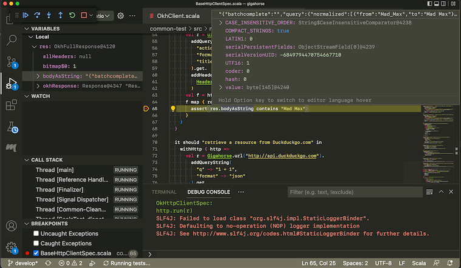
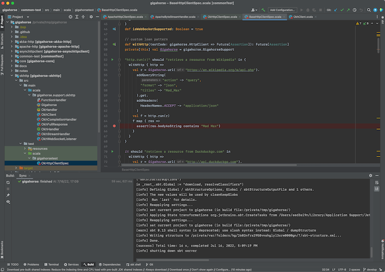

sbt 之书 (草稿)
这是关于 sbt 2.x 的草稿文档，目前尚未发布。虽然总体概念可以应用到 sbt 1.x，但 2.x 及本文档的详细内容可能会有所变动。

sbt 是一个用于 Scala 和 Java 的简单构建工具。 sbt 通过 Coursier 下载您的库依赖， 增量编译和测试项目， 并与 IntelliJ 和 VS Code 等 IDE 集成， 打包 JAR 文件并发布到 Central repo， 这是 JVM 社区的包注册表。
scalaVersion := "3.7.3"
您只需要在 build.sbt 中添加一行代码即可开始使用 Scala。
链接
- 此文档的源代码托管在 sbt/website
- sbt 1.x 的文档
安装 sbt runner
要构建 sbt 工程，你需要经过以下几步：
- 安装 JDK（建议使用 Eclipse Adoptium 的 Temurin JDK 8、11 或 17，或者适用于 ARM 芯片的 macOS 的 Zulu JDK 8）。
- 安装 sbt runner。
sbt runner 是一个 shell 脚本，它会在必要时提前下载指定版本的 sbt 并调用它。通过这种机制，构建作者可以精确控制 sbt 的版本，而不是依赖用户的机器环境。
软件需求
sbt 可在所有主流操作系统上运行；但是，运行它需要 JDK 8 或更高版本。
java -version
# openjdk version "1.8.0_352"
通过 SDKMAN 安装
要同时安装 JDK 和 sbt，可以考虑使用 SDKMAN。
sdk install java $(sdk list java | grep -o "\b8\.[0-9]*\.[0-9]*\-tem" | head -1)
sdk install sbt
通用的包安装
验证 sbt runner
sbt --script-version
# 1.11.7
sbt 示例教程
本页面假设您已经安装了 sbt runner。
让我们从示例开始，而不是解释 sbt 如何工作或为什么这样工作。
创建一个最小的 sbt 构建
mkdir foo-build
cd foo-build
touch build.sbt
mkdir project
echo "sbt.version=2.0.0-RC6" > project/build.properties
启动 sbt shell
$ sbt
[info] welcome to sbt 2.0.0-RC6 (Azul Systems, Inc. Java)
....
[info] started sbt server
sbt:foo-build>
退出 sbt shell
要退出 sbt shell，请输入 exit 或使用 Ctrl+D（Unix）或 Ctrl+Z（Windows）。
sbt:foo-build> exit
编译一个项目
按照惯例，我们将使用 sbt:...> 或 > 提示符来表示我们正在 sbt 交互式 shell 中。
$ sbt
sbt:foo-build> compile
[success] elapsed time: 0 s, cache 0%, 1 onsite task
代码更改时重新编译
在 compile 命令（或任何其他命令）前加上 ~ 会导致该命令在项目中的源文件被修改时自动重新执行。例如:
sbt:foo-build> ~compile
[success] elapsed time: 0 s, cache 100%, 1 disk cache hit
[info] 1. Monitoring source files for foo-build/compile...
[info] Press <enter> to interrupt or '?' for more options.
创建一个源文件
保持前一个命令运行。从另一个 shell 或在您的文件管理器中，在 foo-build 目录下创建以下嵌套目录：src/main/scala/example。然后，使用您喜欢的编辑器在 example 目录中创建 Hello.scala，内容如下：
package example
@main def main(args: String*): Unit =
println(s"Hello ${args.mkString}")
运行中的命令应该会检测到这个新文件：
[info] Build triggered by /tmp/foo-build/src/main/scala/example/Hello.scala. Running 'compile'.
[info] compiling 1 Scala source to /tmp/foo-build/target/out/jvm/scala-3.3.3/foo/backend ...
[success] elapsed time: 1 s, cache 0%, 1 onsite task
[info] 2. Monitoring source files for foo-build/compile...
[info] Press <enter> to interrupt or '?' for more options.
按 Enter 键退出 ~compile。
运行先前的命令
在 sbt shell 中，按两次向上箭头键找到您在开始时执行的 compile 命令。
sbt:foo-build> compile
获取帮助
使用 help 命令获取关于可用命令的基本帮助。
sbt:foo-build> help
<command> (; <command>)* Runs the provided semicolon-separated commands.
about Displays basic information about sbt and the build.
tasks Lists the tasks defined for the current project.
settings Lists the settings defined for the current project.
reload (Re)loads the current project or changes to plugins project or returns from it.
new Creates a new sbt build.
new Creates a new sbt build.
projects Lists the names of available projects or temporarily adds/removes extra builds to the session.
....
显示特定任务的描述：
sbt:foo-build> help run
Runs a main class, passing along arguments provided on the command line.
运行您的应用
sbt:foo-build> run
[info] running example.main
Hello
[success] elapsed time: 0 s, cache 50%, 1 disk cache hit, 1 onsite task
从 sbt shell 设置 scalaVersion
sbt:foo-build> set scalaVersion := "3.7.3"
[info] Defining scalaVersion
[info] The new value will be used by Compile / bspBuildTarget, Compile / dependencyTreeCrossProjectId and 51 others.
[info] Run `last` for details.
[info] Reapplying settings...
[info] set current project to foo (in build file:/tmp/foo-build/)
检查 scalaVersion 设置：
sbt:foo-build> scalaVersion
[info] 3.7.3
将会话保存到 build.sbt
我们可以使用 session save 保存临时设置。
sbt:foo-build> session save
[info] Reapplying settings...
[info] set current project to foo-build (in build file:/tmp/foo-build/)
[warn] build source files have changed
[warn] modified files:
[warn] /tmp/foo-build/build.sbt
[warn] Apply these changes by running `reload`.
[warn] Automatically reload the build when source changes are detected by setting `Global / onChangedBuildSource := ReloadOnSourceChanges`.
[warn] Disable this warning by setting `Global / onChangedBuildSource := IgnoreSourceChanges`.
build.sbt 文件现在应该包含：
scalaVersion := "3.7.3"
命名您的项目
使用编辑器，按如下方式更改 build.sbt：
scalaVersion := "3.3.3"
organization := "com.example"
name := "Hello"
重新加载构建
使用 reload 命令重新加载构建。该命令会导致 build.sbt 文件被重新读取，并应用其设置。
sbt:foo-build> reload
[info] welcome to sbt 2.x (Azul Systems, Inc. Java)
[info] loading project definition from /tmp/foo-build/project
[info] loading settings for project hello from build.sbt ...
[info] set current project to Hello (in build file:/tmp/foo-build/)
sbt:Hello>
请注意，提示符现在已更改为 sbt:Hello>。
将 toolkit-test 添加到 libraryDependencies
使用编辑器，按如下方式更改 build.sbt：
scalaVersion := "3.3.3"
organization := "com.example"
name := "Hello"
libraryDependencies += "org.scala-lang" %% "toolkit-test" % "0.1.7" % Test
使用 reload 命令使 build.sbt 中的更改生效。
sbt:Hello> reload
运行增量测试
sbt:Hello> test
持续运行增量测试
sbt:Hello> ~test
编写测试
保持前一个命令运行，使用编辑器创建一个名为 src/test/scala/example/HelloSuite.scala 的文件:
package example
class HelloSuite extends munit.FunSuite:
test("Hello should start with H") {
assert("hello".startsWith("H"))
}
end HelloSuite
~test 应该会检测到更改:
example.HelloSuite:
==> X example.HelloSuite.Hello should start with H 0.012s munit.FailException: /tmp/foo-build/src/test/scala/example/HelloSuite.scala:5 assertion failed
4: test("Hello should start with H") {
5: assert("hello".startsWith("H"))
6: }
at munit.FunSuite.assert(FunSuite.scala:11)
at example.HelloSuite.$init$$$anonfun$1(HelloSuite.scala:5)
[error] Failed: Total 1, Failed 1, Errors 0, Passed 0
[error] Failed tests:
[error] example.HelloSuite
[error] (Test / testQuick) sbt.TestsFailedException: Tests unsuccessful
[error] elapsed time: 1 s, cache 50%, 3 disk cache hits, 3 onsite tasks
使测试通过
使用编辑器，将 src/test/scala/example/HelloSuite.scala 更改为:
package example
class HelloSuite extends munit.FunSuite:
test("Hello should start with H") {
assert("Hello".startsWith("H"))
}
end HelloSuite
确认测试通过，然后按 Enter 键退出持续测试。
添加库依赖
使用编辑器，按如下方式更改 build.sbt：
scalaVersion := "3.3.3"
organization := "com.example"
name := "Hello"
libraryDependencies ++= Seq(
"org.scala-lang" %% "toolkit" % "0.1.7",
"org.scala-lang" %% "toolkit-test" % "0.1.7" % Test,
)
使用 reload 命令使 build.sbt 中的更改生效。
使用 Scala REPL
我们可以查询纽约的当前天气。
sbt:Hello> console
Welcome to Scala 3.3.3 (1.8.0_402, Java OpenJDK 64-Bit Server VM).
Type in expressions for evaluation. Or try :help.
scala>
import sttp.client4.quick.*
import sttp.client4.Response
val newYorkLatitude: Double = 40.7143
val newYorkLongitude: Double = -74.006
val response: Response[String] = quickRequest
.get(
uri"https://api.open-meteo.com/v1/forecast?latitude=\$newYorkLatitude&longitude=\$newYorkLongitude¤t_weather=true"
)
.send()
println(ujson.read(response.body).render(indent = 2))
// press Ctrl+D
// Exiting paste mode, now interpreting.
{
"latitude": 40.710335,
"longitude": -73.99307,
"generationtime_ms": 0.36704540252685547,
"utc_offset_seconds": 0,
"timezone": "GMT",
"timezone_abbreviation": "GMT",
"elevation": 51,
"current_weather": {
"temperature": 21.3,
"windspeed": 16.7,
"winddirection": 205,
"weathercode": 3,
"is_day": 1,
"time": "2023-08-04T10:00"
}
}
import sttp.client4.quick._
import sttp.client4.Response
val newYorkLatitude: Double = 40.7143
val newYorkLongitude: Double = -74.006
val response: sttp.client4.Response[String] = Response({"latitude":40.710335,"longitude":-73.99307,"generationtime_ms":0.36704540252685547,"utc_offset_seconds":0,"timezone":"GMT","timezone_abbreviation":"GMT","elevation":51.0,"current_weather":{"temperature":21.3,"windspeed":16.7,"winddirection":205.0,"weathercode":3,"is_day":1,"time":"2023-08-04T10:00"}},200,,List(:status: 200, content-encoding: deflate, content-type: application/json; charset=utf-8, date: Fri, 04 Aug 2023 10:09:11 GMT),List(),RequestMetadata(GET,https://api.open-meteo.com/v1/forecast?latitude=40.7143&longitude...
scala> :q // to quit
创建子项目
按如下方式更改 build.sbt:
scalaVersion := "3.3.3"
organization := "com.example"
lazy val hello = project
.in(file("."))
.settings(
name := "Hello",
libraryDependencies ++= Seq(
"org.scala-lang" %% "toolkit" % "0.1.7",
"org.scala-lang" %% "toolkit-test" % "0.1.7" % Test
)
)
lazy val helloCore = project
.in(file("core"))
.settings(
name := "Hello Core"
)
使用 reload 命令使 build.sbt 中的更改生效。
列出所有子项目
sbt:Hello> projects
[info] In file:/tmp/foo-build/
[info] * hello
[info] helloCore
编译子项目
sbt:Hello> helloCore/compile
将 toolkit-test 添加到子项目
按如下方式更改 build.sbt:
scalaVersion := "3.3.3"
organization := "com.example"
val toolkitTest = "org.scala-lang" %% "toolkit-test" % "0.1.7"
lazy val hello = project
.in(file("."))
.settings(
name := "Hello",
libraryDependencies ++= Seq(
"org.scala-lang" %% "toolkit" % "0.1.7",
toolkitTest % Test
)
)
lazy val helloCore = project
.in(file("core"))
.settings(
name := "Hello Core",
libraryDependencies += toolkitTest % Test
)
广播命令
设置 aggregate 以便发送到 hello 的命令也会广播到 helloCore:
scalaVersion := "3.3.3"
organization := "com.example"
val toolkitTest = "org.scala-lang" %% "toolkit-test" % "0.1.7"
lazy val hello = project
.in(file("."))
.aggregate(helloCore)
.settings(
name := "Hello",
libraryDependencies ++= Seq(
"org.scala-lang" %% "toolkit" % "0.1.7",
toolkitTest % Test
)
)
lazy val helloCore = project
.in(file("core"))
.settings(
name := "Hello Core",
libraryDependencies += toolkitTest % Test
)
reload 之后，~test 现在会在两个子项目上运行:
sbt:Hello> ~test
按 Enter 键退出持续测试。
使 hello 依赖于 helloCore
使用 .dependsOn(...) 添加对其他子项目的依赖。同时，让我们将 toolkit 依赖移至 helloCore。
scalaVersion := "3.3.3"
organization := "com.example"
val toolkitTest = "org.scala-lang" %% "toolkit-test" % "0.1.7"
lazy val hello = project
.in(file("."))
.aggregate(helloCore)
.dependsOn(helloCore)
.settings(
name := "Hello",
libraryDependencies += toolkitTest % Test
)
lazy val helloCore = project
.in(file("core"))
.settings(
name := "Hello Core",
libraryDependencies += "org.scala-lang" %% "toolkit" % "0.1.7",
libraryDependencies += toolkitTest % Test
)
使用 uJson 解析 JSON
让我们在 helloCore 中使用 toolkit 中的 uJson。
添加 core/src/main/scala/example/core/Weather.scala:
package example.core
import sttp.client4.quick._
import sttp.client4.Response
object Weather:
def temp() =
val response: Response[String] = quickRequest
.get(
uri"https://api.open-meteo.com/v1/forecast?latitude=40.7143&longitude=-74.006¤t_weather=true"
)
.send()
val json = ujson.read(response.body)
json.obj("current_weather")("temperature").num
end Weather
接下来，按如下方式更改 src/main/scala/example/Hello.scala:
package example
import example.core.Weather
@main def main(args: String*): Unit =
val temp = Weather.temp()
println(s"Hello! The current temperature in New York is $temp C.")
让我们运行应用，看看它是否正常工作:
sbt:Hello> run
[info] compiling 1 Scala source to /tmp/foo-build/core/target/scala-2.13/classes ...
[info] compiling 1 Scala source to /tmp/foo-build/target/scala-2.13/classes ...
[info] running example.Hello
Hello! The current temperature in New York is 22.7 C.
临时切换 scalaVersion
sbt:Hello> ++3.3.3!
[info] Forcing Scala version to 3.3.3 on all projects.
[info] Reapplying settings...
[info] Set current project to Hello (in build file:/tmp/foo-build/)
检查 scalaVersion 设置：
sbt:Hello> scalaVersion
[info] helloCore / scalaVersion
[info] 3.3.3
[info] scalaVersion
[info] 3.3.3
此设置将在 reload 之后消失。
批处理模式
您也可以在批处理模式下运行 sbt，直接从终端传递 sbt 命令。
$ sbt clean "testOnly HelloSuite"
sbt new 命令
您可以使用 sbt new 命令快速设置一个简单的 "Hello world" 构建。
$ sbt new scala/scala-seed.g8
....
A minimal Scala project.
name [My Something Project]: hello
Template applied in ./hello
当提示输入项目名称时，请输入 hello。
这将在名为 hello 的目录下创建一个新项目。
致谢
本页面基于 William "Scala William" Narmontas 编写的 Essential sbt 教程。
sbt 入门
sbt 使用少数的几个概念来支撑它灵活并且强大的构建定义。其实没有太多的概念，但是 sbt 并不完全像其他的构建体系，而且如果您没有看过文档的话，您偶尔将会遇到一些细节问题。
这篇入门指南覆盖了一些您在创建和维护一个 sbt 构建定义时需要知道的概念。
强烈建议看完该入门指南。
sbt 的存在理由
预备知识
在 Scala 中，库或程序使用 Scala 编译器 scalac 进行编译，正如 Scala 3 Book 中所记录的:
@main def hello() = println("Hello, World!")
$ scalac hello.scala
$ scala hello
Hello, World!
如果我们直接调用 scalac，这个过程会变得乏味且缓慢，因为我们必须传递所有 Scala 源文件名。
此外，大多数非平凡的程序可能会有库依赖，因此也会传递性地依赖于它们的依赖项。对于 Scala 生态系统来说，这更加复杂，因为我们有 Scala 2.12，2.13 生态系统，Scala 3.x 生态系统，以及 JVM，JS 和 Native 平台。
与其使用 JAR 文件和 scalac，我们可以通过引入更高级别的子项目抽象概念并使用构建工具来避免手动劳作。
sbt
sbt 是为 Scala 和 Java 创建的简单构建工具。它允许我们声明子项目及其各种依赖项和自定义任务，以确保我们始终能获得快速，可重复的构建。
为了实现这一目标，sbt 做了几件事:
- sbt 本身的版本记录在
project/build.properties中。 - 定义了一种称为 build.sbt DSL 的领域特定语言，可以在
build.sbt中声明 Scala 版本和其他子项目信息。 - 使用 Coursier 获取子项目依赖及其依赖项。
- 调用 Zinc 增量编译 Scala 和 Java 源代码。
- 在可能的情况下自动并行运行任务。
- 定义了如何将包发布到 Maven 仓库的约定，以便与更广泛的 JVM 生态系统进行互操作。
在很大程度上，sbt 标准化了构建给定程序或库所需的命令。
build.sbt DSL 的必要性
sbt 采用基于 Scala 的 build.sbt DSL 来声明子项目和任务图。如今，使用 DSL 而非 YAML 和 XML 等配置格式几乎不再是 sbt 的独特之处。许多构建工具，如 Gradle，Google 的 Bazel，Meta 的 Buck 以及 Apple 的 SwiftPM 都使用 DSL 来定义子项目。
build.sbt 最初几乎可以像 YAML 文件一样，仅声明 scalaVersion 和 libraryDependencies，但随着您对构建系统需求的增长，它可以进行扩展:
- 为了避免重复相同的信息，例如库的版本号，
build.sbt可以使用val声明变量。 - 在需要时使用 Scala 语言结构（如
if）来定义设置和任务。 - 静态类型的设置和任务，可在构建开始前捕获拼写错误和类型错误。类型还有助于将数据从一个任务传递到另一个任务。
- 通过
Initialized[Task[A]]提供结构化并发。DSL 使用所谓的直接风格.value语法来简洁地定义任务图。 - 使社区能够通过插件扩展 sbt，这些插件提供自定义任务或语言扩展，如 Scala.JS。
创建新的构建
要使用 sbt 开始新的构建，请使用 sbt new。
$ mkdir /tmp/foo
$ cd /tmp/foo
$ sbt new
Welcome to sbt new!
Here are some templates to get started:
a) scala/toolkit.local - Scala Toolkit (beta) by Scala Center and VirtusLab
b) typelevel/toolkit.local - Toolkit to start building Typelevel apps
c) sbt/cross-platform.local - A cross-JVM/JS/Native project
d) scala/scala3.g8 - Scala 3 seed template
e) scala/scala-seed.g8 - Scala 2 seed template
f) playframework/play-scala-seed.g8 - A Play project in Scala
g) playframework/play-java-seed.g8 - A Play project in Java
i) softwaremill/tapir.g8 - A tapir project using Netty
m) scala-js/vite.g8 - A Scala.JS + Vite project
n) holdenk/sparkProjectTemplate.g8 - A Scala Spark project
o) spotify/scio.g8 - A Scio project
p) disneystreaming/smithy4s.g8 - A Smithy4s project
q) quit
Select a template:
如果您选择 "a"，您将会收到更多问题的提示:
Select a template: a
Scala version (default: 3.3.0):
Scala Toolkit version (default: 0.2.0):
按回车键选择默认值。
[info] Updated file /private/tmp/bar/project/build.properties: set sbt.version to 1.9.8
[info] welcome to sbt 1.9.8 (Azul Systems, Inc. Java 1.8.0_352)
....
[info] set current project to bar (in build file:/private/tmp/foo/)
[info] sbt server started at local:///Users/eed3si9n/.sbt/1.0/server/d0ac1409c0117a949d47/sock
[info] started sbt server
sbt:bar> exit
[info] shutting down sbt server
以下是此模板创建的文件:
.
├── build.sbt
├── project
│ └── build.properties
├── src
│ ├── main
│ │ └── scala
│ │ └── example
│ │ └── Main.scala
│ └── test
│ └── scala
│ └── example
│ └── ExampleSuite.scala
└── target
让我们看一下 build.sbt 文件:
val toolkitV = "0.2.0"
val toolkit = "org.scala-lang" %% "toolkit" % toolkitV
val toolkitTest = "org.scala-lang" %% "toolkit-test" % toolkitV
scalaVersion := "3.3.0"
libraryDependencies += toolkit
libraryDependencies += (toolkitTest % Test)
这被称为构建定义，它包含 sbt 编译项目所需的信息。这是用 .sbt 格式编写的，它是 Scala 语言的一个子集。
以下是 src/main/scala/example/Main.scala 中的内容:
package example
@main def main(args: String*): Unit =
println(s"Hello ${args.mkString}")
这是一个 Hello world 模板。我们可以通过启动 sbt --client 并在 shell 中输入 run <您的名字> 来从 sbt shell 运行它:
$ sbt --client
[info] entering *experimental* thin client - BEEP WHIRR
[info] server was not detected. starting an instance
....
info] terminate the server with `shutdown`
[info] disconnect from the server with `exit`
sbt:bar> run Raj
[info] running example.main Raj
Hello Raj
[success] Total time: 0 s, completed Feb 18, 2024 2:38:10 PM
Giter8 模板
除了几个 .local 模板外，sbt new 还与 Giter8 集成，这是一个使用 GitHub 托管模板的开放模板系统。例如，scala/scala3.g8 由 Scala 团队维护，用于创建新的 Scala 3 构建:
$ /tmp
$ sbt new scala/scala3.g8
Giter8 wiki 列出了 100 多个可以快速启动您新构建的模板。
sbt components
sbt runner
An sbt build is executed using sbt runner, also called "sbt-the-shell-script" to distinguish from other components. It's important to note is that sbt runner is designed to run any version of sbt.
Specifying sbt version with project/build.properties
sbt runner executes a subcomponent called sbt launcher, which reads project/build.properties to determine the sbt version for the build, and downloads the artifacts if they haven't been cached:
sbt.version=2.0.0-RC6
This means that:
- Anyone who checkouts your build would get the same sbt version, regardless of sbt runner they may have installed on their machines.
- The change of sbt version can be tracked in a version control system, like git.
sbtn (sbt --client)
sbtn (native thin client) is a subcomponent of sbt runner, called when you pass --client flag to sbt runner, and is used to send commands to sbt server. It is called sbtn because it is compiled to native code using GraalVM native-image. The protocol between sbtn and sbt server is stable enough that it should work between most recent versions of sbt.
sbt server (sbt --server)
sbt server is the actual build tool whose version is specified using project/build.properties. sbt server acts as a cashier to take commands from sbtn and editors.
Coursier
sbt server runs Couriser as a subcomponent to resolve Scala library, Scala compiler, and any other library dependencies your build needs.
Zinc
Zinc is the incremental compiler for Scala, developed and maintained by sbt project. An often overlooked aspect of Zinc is that Zinc provides a stable API to invoke any modern versions of Scala compiler. Combined with the fact that Coursier can resolve any Scala version, with sbt we can invoke any modern versions of Scala just by writing a single line build.sbt:
scalaVersion := "3.7.3"
BSP server
sbt server supports Build Server Protocol (BSP) to list build targets, build them, etc. This allows IDEs like IntelliJ and Metals to communicate with a running sbt server programmatically.
Connecting to sbt server
Let's look at three ways of connecting to sbt server.
sbt shell using sbtn
Run sbt in the working directory of your build:
sbt
This should display something like the following:
$ sbt
[info] server was not detected. starting an instance
[info] welcome to sbt 2.0.0-alpha7 (Azul Systems, Inc. Java 1.8.0_352)
[info] loading project definition from /private/tmp/bar/project
[info] loading settings for project bar from build.sbt ...
[info] set current project to bar (in build file:/private/tmp/bar/)
[info] sbt server started at local:///Users/eed3si9n/.sbt/2.0.0-alpha7/server/d0ac1409c0117a949d47/sock
[info] started sbt server
[info] terminate the server with `shutdown`
[info] disconnect from the server with `exit`
sbt:bar>
Running sbt with no command line arguments starts sbt shell. sbt shell has a command prompt (with tab completion and history!).
For example, you could type compile at the sbt shell:
sbt:bar> compile
To compile again, press up arrow and then enter.
To leave sbt shell, type exit or use Ctrl-D (Unix) or Ctrl-Z (Windows).
Batch mode using sbtn
You can also run sbt in batch mode:
sbt compile
sbt testOnly TestA
$ sbt compile
> compile
Shutting down sbt server
Run the following to shutdown all sbt servers on your machine:
sbt shutdownall
Or the following to shutdown just the current one:
sbt shutdown
Basic tasks
This page describes how to use sbt once you have set up your project. This page assumes you've read sbt components.
If you pull a repository that uses sbt, it's fairly easy to get started. First, get the package from GitHub, or some other repository.
$ git clone https://github.com/scalanlp/breeze.git
$ cd breeze
sbt shell with sbtn
As mentioned in sbt components, start an sbt shell:
$ sbt
This should display something like the following:
$ sbt
[info] entering *experimental* thin client - BEEP WHIRR
[info] server was not detected. starting an instance
[info] welcome to sbt 1.5.5 (Azul Systems, Inc. Java 1.8.0_352)
[info] loading global plugins from /Users/eed3si9n/.sbt/1.0/plugins
[info] loading settings for project breeze-build from plugins.sbt ...
[info] loading project definition from /private/tmp/breeze/project
Downloading https://repo1.maven.org/maven2/org/scalanlp/sbt-breeze-expand-codegen_2.12_1.0/0.2.1/sbt-breeze-expand-codegen-0.2.1.pom
....
[info] sbt server started at local:///Users/eed3si9n/.sbt/1.0/server/dd982e07e85c7de1b618/sock
[info] terminate the server with `shutdown`
[info] disconnect from the server with `exit`
sbt:breeze-parent>
projects command
Let's explore the build by listing out the subprojects with projects command:
sbt:breeze-parent> projects
[info] In file:/private/tmp/breeze/
[info] benchmark
[info] macros
[info] math
[info] natives
[info] * root
[info] viz
This shows that this build has 6 subprojects, including the current subproject called root.
tasks command
Similarly, we can list the tasks availble to this build using tasks command:
sbt:breeze-parent> tasks
This is a list of tasks defined for the current project.
It does not list the scopes the tasks are defined in; use the 'inspect' command for that.
Tasks produce values. Use the 'show' command to run the task and print the resulting value.
bgRun Start an application's default main class as a background job
bgRunMain Start a provided main class as a background job
clean Deletes files produced by the build, such as generated sources, compiled classes, and task caches.
compile Compiles sources.
console Starts the Scala interpreter with the project classes on the classpath.
consoleProject Starts the Scala interpreter with the sbt and the build definition on the classpath and useful imports.
consoleQuick Starts the Scala interpreter with the project dependencies on the classpath.
copyResources Copies resources to the output directory.
doc Generates API documentation.
package Produces the main artifact, such as a binary jar. This is typically an alias for the task that actually does the packaging.
packageBin Produces a main artifact, such as a binary jar.
packageDoc Produces a documentation artifact, such as a jar containing API documentation.
packageSrc Produces a source artifact, such as a jar containing sources and resources.
publish Publishes artifacts to a repository.
publishLocal Publishes artifacts to the local Ivy repository.
publishM2 Publishes artifacts to the local Maven repository.
run Runs a main class, passing along arguments provided on the command line.
runMain Runs the main class selected by the first argument, passing the remaining arguments to the main method.
test Executes all tests.
testOnly Executes the tests provided as arguments or all tests if no arguments are provided.
testQuick Executes the tests that either failed before, were not run or whose transitive dependencies changed, among those provided as arguments.
update Resolves and optionally retrieves dependencies, producing a report.
More tasks may be viewed by increasing verbosity. See 'help tasks'
compile
The compile tasks compiles the sources, after resolving and downloading the library dependendies.
> compile
This should display something like the following:
sbt:breeze-parent> compile
[info] compiling 341 Scala sources and 1 Java source to /private/tmp/breeze/math/target/scala-3.1.3/classes ...
| => math / Compile / compileIncremental 51s
run
The run task runs the main class for the subproject. In the sbt shell, type math/run:
> math/run
math/run means run task, scoped to math subproject. This should display something like the following:
sbt:breeze-parent> math/run
[info] Scala version: 3.1.3 true
....
Multiple main classes detected. Select one to run:
[1] breeze.optimize.linear.NNLS
[2] breeze.optimize.proximal.NonlinearMinimizer
[3] breeze.optimize.proximal.QuadraticMinimizer
[4] breeze.util.UpdateSerializedObjects
Enter number:
Enter 1 at the prompt.
test
The test task tests either the tests that failed before, were not run, or whose transitive dependencies changed.
> math/test
This should display something like the following:
sbt:breeze-parent> math/testQuick
[info] FeatureVectorTest:
[info] - axpy fv dv (1 second, 106 milliseconds)
[info] - axpy fv vb (9 milliseconds)
[info] - DM mult (19 milliseconds)
[info] - CSC mult (32 milliseconds)
[info] - DM trans mult (4 milliseconds)
....
[info] Run completed in 58 seconds, 183 milliseconds.
[info] Total number of tests run: 1285
[info] Suites: completed 168, aborted 0
[info] Tests: succeeded 1285, failed 0, canceled 0, ignored 0, pending 0
[info] All tests passed.
[success] Total time: 130 s (02:10), completed Feb 19, 2024
Watch (tilde) command
To speed up your edit-compile-test cycle, you can ask sbt to automatically recompile or run tests whenever you save a source file.
Make a command run when one or more source files change by prefixing the command with ~. For example, in sbt shell try:
> ~test
Press enter to stop watching for changes. You can use the ~ prefix with either sbt shell or batch mode.
Build definition basics
This page discusses the build.sbt build definition.
What is a build definition?
A build definition is defined in build.sbt, and it consists of a set of projects (of type Project). Because the term project can be ambiguous, we often call it a subproject in this guide.
For instance, in build.sbt you define the subproject located in the current directory like this:
scalaVersion := "3.3.3"
name := "Hello"
or more explicitly:
lazy val root = (project in file("."))
.settings(
scalaVersion := "3.3.3",
name := "Hello",
)
Each subproject is configured by key-value pairs. For example, one key is name and it maps to a string value, the name of your subproject. The key-value pairs are listed under the .settings(...) method.
build.sbt DSL
build.sbt defines subprojects using a DSL called build.sbt DSL, which is based on Scala. Initially you can use build.sbt DSL, like a YAML file, declaring just scalaVersion and libraryDependencies, but it can supports more features to keep the build definition organized as the build grows larger.
Typed setting expression
Let's take a closer look at the build.sbt DSL:
organization := "com.example"
^^^^^^^^^^^^ ^^^^^^^^ ^^^^^^^^^^^^^
key operator (setting/task) body
Each entry is called a setting expression. Some among them are also called task expressions. We will see more on the difference later in this page.
A setting expression consists of three parts:
- Left-hand side is a key.
- Operator, which in this case is
:= - Right-hand side is called the body, or the setting/task body.
On the left-hand side, name, version, and scalaVersion are keys. A key is an instance of SettingKey[A], TaskKey[A], or InputKey[A] where A is the expected value type.
Because key name is typed to SettingKey[String], the := operator on name is also typed specifically to String. If you use the wrong value type, the build definition will not compile:
name := 42 // will not compile
vals and lazy vals
To avoid repeating the same information, like the version number for a library, build.sbt may be interspersed with vals, lazy vals, and defs.
val toolkitV = "0.2.0"
val toolkit = "org.scala-lang" %% "toolkit" % toolkitV
val toolkitTest = "org.scala-lang" %% "toolkit-test" % toolkitV
scalaVersion := "3.7.3"
libraryDependencies += toolkit
libraryDependencies += (toolkitTest % Test)
In the above, val defines a variable, which are initialized from the top to bottom. This means that toolkitV must be defined before it is referenced.
Here's a bad example:
// bad example
val toolkit = "org.scala-lang" %% "toolkit" % toolkitV // uninitialized reference!
val toolkitTest = "org.scala-lang" %% "toolkit-test" % toolkitV // uninitialized reference!
val toolkitV = "0.2.0"
sbt will fail to load with java.lang.ExceptionInInitializerError cased by a NullPointerException if your build.sbt contains an uninitialized forward reference. One way to let the compiler fix this is to define the variables as lazy:
lazy val toolkit = "org.scala-lang" %% "toolkit" % toolkitV
lazy val toolkitTest = "org.scala-lang" %% "toolkit-test" % toolkitV
lazy val toolkitV = "0.2.0"
Some frown upon gratuitous lazy vals, but Scala 3 lazy vals are efficient, and we think it makes the build definition more robust for copy-pasting.
Top-level objects and classes are not allowed in build.sbt.
Those should go in the project/ directory as Scala source files.
Library dependency basics
This page explains the basics of library dependency management using sbt.
sbt uses Coursier to implement managed dependencies, so if you're familiar with package managers like Coursier, npm, PIP, etc you won't have much trouble.
As opposed to downloading required JAR files by hand (unmanaged dependencies), a managed dependency system automates fetching external libraries for a subproject. Tools like Coursier interpret the declared ModuleID, perform dependency resolution (expand all the transitive dependencies, and resolve any version conflicts to determine the exact versions), and download and cache the resulting artifacts, ensuring consistent JAR management.
The libraryDependencies key
Declaring a dependency looks like this, where groupId, artifactId, and revision are strings:
libraryDependencies += groupID % artifactID % revision
or like this, where configuration can be a string or a Configuration value (such as Test):
libraryDependencies += groupID % artifactID % revision % configuration
When you run:
> compile
sbt will automatically resolve the dependencies and download the JAR files.
Getting the right Scala version with %%
If you use organization %% moduleName % version rather than organization % moduleName % version (the difference is the double %% after the organization), sbt will add your project's binary Scala version to the artifact name. This is just a shortcut. You could write this without the %%:
libraryDependencies += "org.scala-lang" % "toolkit_3" % "0.2.0"
Assuming the scalaVersion for your build is 3.x, the following is identical (note the double %% after "org.scala-lang"):
libraryDependencies += "org.scala-lang" %% "toolkit" % "0.2.0"
The idea is that many dependencies are compiled for multiple Scala versions, and you'd like to get the one that matches your project to ensure binary compatibility.
Tracking dependencies in one place
.scala files under project becomes part of the build definition, which we can use to track dependencies in one place by creating a file named project/Dependencies.scala.
// place this file at project/Dependencies.scala
import sbt.*
object Dependencies:
// versions
lazy val toolkitV = "0.2.0"
// libraries
val toolkit = "org.scala-lang" %% "toolkit" % toolkitV
val toolkitTest = "org.scala-lang" %% "toolkit-test" % toolkitV
end Dependencies
The Dependencies object will be available in build.sbt. To make it easier to use the vals defined in it, import Dependencies.* in your build.sbt file.
import Dependencies.*
scalaVersion := "3.7.3"
name := "something"
libraryDependencies += toolkit
libraryDependencies += toolkitTest % Test
Viewing library dependencies
Type in Compile/dependencyTree in the sbt shell to show the library dependency tree, including the transitive dependencies:
> Compile/dependencyTree
This should display something like the following:
sbt:bar> Compile/dependencyTree
[info] default:bar_3:0.1.0-SNAPSHOT
[info] +-org.scala-lang:scala3-library_3:3.3.1 [S]
[info] +-org.scala-lang:toolkit_3:0.2.0
[info] +-com.lihaoyi:os-lib_3:0.9.1
[info] | +-com.lihaoyi:geny_3:1.0.0
[info] | | +-org.scala-lang:scala3-library_3:3.1.3 (evicted by: 3.3.1)
[info] | | +-org.scala-lang:scala3-library_3:3.3.1 [S]
....
Multi project basics
While a simple program can start out as a single-project build, it's more common for a build to split into smaller, multiple subprojects.
Each subproject in a build has its own source directories, generates its own JAR file when you run packageBin, and in general works like any other project.
A subproject is defined by declaring a lazy val of type Project. For example, :
scalaVersion := "3.7.3"
LocalRootProject / publish / skip := true
lazy val core = (project in file("core"))
.settings(
name := "core",
)
lazy val util = (project in file("util"))
.dependsOn(core)
.settings(
name := "util",
)
The name of the val is used as the subproject's ID, which is used to refer to the subproject in the sbt shell.
sbt will always define a root project, so in the above build definition, we will have total of three subprojects.
Subproject dependency
A subproject may depend on the code from another subproject. This is done by declaring dependsOn(...). For example, if util needed util on its classpath, you would define util as:
lazy val util = (project in file("util"))
.dependsOn(core)
Task aggregation
Task aggregation means that running a task on the aggregate subproject will also run on the aggregated subprojects.
scalaVersion := "3.7.3"
lazy val root = (project in file("."))
.autoAggregate
.settings(
publish / skip := true
)
lazy val util = (project in file("util"))
lazy val core = (project in file("core"))
In the above example, the root subproject aggregates util and core. When you type compile in the sbt shell, all tree subprojects are compiled in parallel.
Root project
The subproject at the root of the build is called a root project, and often plays a special role in the build. If a subproject is not defined at the root directory of the build, sbt automatically creates a default one that aggregates all other subprojects in the build.
Common settings
In sbt 2.x, bare settings that are written directly in build.sbt without settings(...) are common settings that are injected to all subprojects.
scalaVersion := "3.7.3"
lazy val core = (project in file("core"))
lazy val app = (project in file("app"))
.dependsOn(core)
In the above, the scalaVersion setting is applied to the default root subproject, core, and util.
One exception to this rule is settings that are already scoped to a subproject.
scalaVersion := "3.7.3"
lazy val core = (project in file("core"))
lazy val app = (project in file("app"))
.dependsOn(core)
// This is applied only to app
app / name := "app1"
We can take advantage of this exception to add some settings that only apply to the default root project as follows:
scalaVersion := "3.7.3"
lazy val core = (project in file("core"))
lazy val app = (project in file("app"))
.dependsOn(core)
// These are applied only to root
LocalRootProject / name := "root"
LocalRootProject / publish / skip := true
Plugin basics
What is a plugin?
A plugin extends the build definition, most commonly by adding new settings and tasks. For example, a plugin could add githubWorkflowGenerate task to generate GitHub Actions YAML.
Finding the plugin versions using Scaladex
You can use Scaladex to search for plugins, and find out the latest version of the plugin.
Declaring a plugin
If your project is in directory hello, and if you are adding sbt-github-actions to the build definition, create hello/project/plugins.sbt and declare the plugin dependency by passing the plugin's module ID to addSbtPlugin(...):
// In project/plugins.sbt
addSbtPlugin("com.github.sbt" % "sbt-github-actions" % "0.28.0")
If you're adding sbt-assembly, add the following:
// In project/plugins.sbt
addSbtPlugin("com.eed3si9n" % "sbt-assembly" % "2.3.1")
See Source dependency plugin recipe for an experimental technique of using plugins hosted on git repos.
Plugins usually provide settings and tasks that get added to a subproject to enable the plugin's functionality. This is described in the next section.
Enabling and disabling auto plugins
A plugin can declare that its settings be automatically added to the build definition, in which case you don't have to do anything to add them.
The auto plugins feature enables plugins to automatically, and safely, ensure their settings and dependencies are on a project. Many auto plugins should have their default settings automatically.
If you're using an auto plugin that requires explicit enablement, then you have to add the following to your build.sbt:
lazy val util = (project in file("util"))
.enablePlugins(FooPlugin, BarPlugin)
.settings(
name := "hello-util"
)
The enablePlugins method allows projects to explicitly define the auto plugins they wish to consume.
Projects can also exclude plugins using the disablePlugins method. For example, if we wish to remove the IvyPlugin settings from util, we modify our build.sbt as follows:
lazy val util = (project in file("util"))
.enablePlugins(FooPlugin, BarPlugin)
.disablePlugins(plugins.IvyPlugin)
.settings(
name := "hello-util"
)
Auto plugins should document whether they need to be explicitly enabled. If you're curious which auto plugins are enabled for a given project, just run the plugins command on the sbt console.
sbt:hello> plugins
In build /tmp/hello/:
Enabled plugins in hello:
sbt.plugins.CorePlugin
sbt.plugins.DependencyTreePlugin
sbt.plugins.Giter8TemplatePlugin
sbt.plugins.IvyPlugin
sbt.plugins.JUnitXmlReportPlugin
sbt.plugins.JvmPlugin
sbt.plugins.SemanticdbPlugin
Plugins that are loaded to the build but not enabled in any subprojects:
sbt.ScriptedPlugin
sbt.plugins.SbtPlugin
Here, the plugins output is showing that the sbt default plugins are all enabled. sbt's default settings are provided via 7 plugins:
CorePlugin: Provides the core parallelism controls for tasks.DependencyTreePlugin: Provides dependency tree tasks.Giter8TemplatePlugin: Providessbt newsupport.IvyPlugin: Provides the mechanisms to publish/resolve modules.JUnitXmlReportPlugin: Provides support for generating junit-xml.JvmPlugin: Provides the mechanisms to compile/test/run/package Java/Scala projects.SemanticdbPlugin: Provides support for generating SemanticDB.
Available plugins
In addition to Scaladex, there's also a list of available plugins.
Build layout
sbt uses conventions for file placement to make it easy to dive into a new sbt build:
.
├── build.sbt
├── project/
│ ├── build.properties
│ ├── Dependencies.scala
│ └── plugins.sbt
├── src/
│ ├── main/
│ │ ├── java/
│ │ ├── resources/
│ │ ├── scala/
│ │ └── scala-2.13/
│ └── test/
│ ├── java/
│ ├── resources/
│ ├── scala/
│ └── scala-2.13/
├── subproject-core/
│ └── src/
│ ├── main/
│ └── test/
├─── subproject-util/
│ └── src/
│ ├── main/
│ └── test/
└── target/
- The local root directory
.is the starting point of your build. - In sbt's terminology, the base directory is the directory containing the subproject. In the above,
.,subproject-core, andsubproject-utilare base directories. - The build definition is described in
build.sbt(actually any files named*.sbt) in the local root directory. - The sbt version is tracked in
project/build.properties. - Generated files (compiled classes, packaged jars, managed files, caches, and documentation) will be written to the
targetdirectory by default.
Build support files
In addition to build.sbt, project directory can contain .scala files that define helper objects and one-off plugins.
.
├── build.sbt
├── project/
│ ├── build.properties
│ ├── Dependencies.scala
│ └── plugins.sbt
....
You may see .sbt files inside project/, which is typically used to declare plugins. See Plugin basics.
Source code
sbt uses the same directory structure as Maven for source files by default (all paths are relative to the base directory):
....
├── src/
│ ├── main/
│ │ ├── java/ <main Java sources>
│ │ ├── resources/ <files to include in main JAR>
│ │ ├── scala/ <main Scala sources>
│ │ └── scala-2.13/ <main Scala 2.13 specific sources>
│ └── test/
│ ├── java/ <test Java sources>
│ ├── resources/ <files to include in test JAR>
│ ├── scala/ <test Scala sources>
│ └── scala-2.13/ <test Scala 2.13 specific sources>
....
Other directories in src/ will be ignored. Additionally, all hidden directories will be ignored.
Source code can be placed in the project's base directory as hello/app.scala, which may be OK for small projects, though for normal projects people tend to keep the projects in the src/main/ directory to keep things neat.
Configuring version control
Your .gitignore (or equivalent for other version control systems) should contain:
target/
Note that this deliberately has a trailing / (to match only directories)
and it deliberately has no leading / (to match project/target/ in
addition to plain target/).
sbt with IDEs
While it's possible to code Scala with just an editor and sbt, most programmers today use an Integrated Development Environment, or IDE for short. Two of the popular IDEs in Scala are Metals and IntelliJ IDEA, and they both integrate with sbt builds.
A few of the advantages of using the IDEs are:
- Jump to definition
- Code completion based on static types
- Listing compilation errors, and jumping to the error positions
- Interactive debugging
Here are a few recipes on how to configure the IDEs to integrate with sbt:
Changes
sbt 2.0 changes (draft)
Changes with compatibility implications
See also Migrating from sbt 1.x.
- Scala 3 in metabuild. sbt 2.x build.sbt DSL, used for build definitions and plugins, is based on Scala 3.x (currently 3.7.3) (Both sbt 1.x and 2.x are capable of building Scala 2.x and 3.x) by @eed3si9n, @adpi2, and others.
- Common settings. Bare settings are added to all subprojects, as opposed to just the root subproject, and thus replacing the role that
ThisBuildhas played. - Incremental test.
testtask is changed to be incremental test that can cache test results. UsetestFullfor full test by @eed3si9n in #7686 - Cached task. All tasks are cached by default. Details in Caching.
- Depedency tree.
dependencyTreetasks are unified to one input task by @eed3si9n in #8199 testtask type is changed fromUnittoTestResultby @eed3si9n in #8181- Default settings and tasks keys typed to
URL(i.e.apiMappings,apiURL,homepage,organizationHomepage,releaseNotesURL) were changed toURIin #7927. licenseskey is changed fromSeq[(String, URL)]toSeq[License]in #7927.- sbt 2.x plugins are published with
_sbt2_3suffix by @eed3si9n in #7671 - sbt 2.x adds
platformsetting soModuleID's%%operator can cross build on JVM as well as JS and Native, as opposed to%%%operator that was created in a plugin to workaround this issue, by @eed3si9n in #6746 - Dropped
useCoursiersetting so Coursier cannot be opted out, by @eed3si9n in #7712 Key.Classpathis changed to be an alias of theSeq[Attributed[xsbti.HashedVirtualFileRef]]type, instead ofSeq[Attributed[File]]. Similarly, some task keys that used to returnFilehave changed to returnHashedVirtualFileRefinstead. See Caching Files.- In sbt 2.x
targetdefaults totarget/out/jvm/scala-3.7.3/<subproject>/, as opposed to<subproject>/target/. - sbt 2.x auto reloads by default on
build.sbtchanges, by @eed3si9n in #8211 Project#autoAggregateis added for automatic aggregation, by @eed3si9n in #8290
Dropped dreprecations
Features
- Project matrix. Project matrix, which was available via plugin in sbt 1.x, is in-sourced to provide parallel cross build support.
- sbt query. sbt 2.x extends the unified slash syntax to support query of subprojects. Details below.
- Local/remote cache system. Details below
- Client-side run. Details below.
Common settings
In sbt 2.x, the bare settings in build.sbt are interpreted to be common settings, and are injected to all subprojects. This means we can now set scalaVersion without using ThisBuild scoping:
scalaVersion := "3.7.3"
This also fixes the so-called dynamic dispatch problem:
lazy val hi = taskKey[String]("")
hi := name.value + "!"
In sbt 1.x hi task will capture the name of the root project, but in sbt 2.x it will return the name of each subproject with !:
$ sbt show hi
[info] entering *experimental* thin client - BEEP WHIRR
[info] terminate the server with `shutdown`
> show hi
[info] foo / hi
[info] foo!
[info] hi
[info] root!
Contributed by @eed3si9n in #6746
sbt query
To filter down the subprojects, sbt 2.x introduces sbt query.
$ sbt foo.../test
The above runs all subprojects that begins with foo.
$ sbt ...@scalaBinaryVersion=3/test
The above runs all subprojects whose scalaBinaryVersion is 3. Contributed by @eed3si9n in #7699
Incremental test
In sbt 2.x, test task became an input task that accept arguments that can filter the test suites to run:
> test *Example*
In addition, test is incremental and cached. This means, the test will not run unless it previously failed or something changed since the last run.
See test for details.
Local/remote cache system
sbt 2.x implements cached task by default, which can automatically cache the task results to local disk and Bazel-compatible remote cache.
lazy val task1 = taskKey[String]("doc for task1")
task1 := name.value + version.value + "!"
This tracks the inputs into the task1 and creates a machine-wide disk cache, which can also be configured to also use a remote cache. Since it's common for sbt tasks to also produce files on the side, we also provide a mechanism to cache file contents:
lazy val task1 = taskKey[String]("doc for task1")
task1 := {
val converter = fileConverter.value
....
val output = converter.toVirtualFile(somefile)
Def.declareOutput(output)
name.value + version.value + "!"
}
See Caching for details. Contributed by @eed3si9n in #7464 / #7525.
Client-side run
The sbt runner 1.10.10 and later script defaults to using sbtn (GraalVM native-image client) for sbt 2.x. In sbt 2.0, sbt server sends the run task back to sbtn, which will fork a fresh JVM. All you have to do is:
sbt run
This avoids blocking the sbt server, and you can have multiple runs. Contributed by @eed3si9n in #8060. See also run documentation.
Performance improvements
Adrien Piquerez contributed a series of changes to improve performance while he was at Scala Center.
- perf: Reduces number of long-living instances to speed up startup by 20% relative to 2.0.0-M2 by @adpi2 in #7866
- perf: Reduces creation of
SettingandInitializeby @adpi2 in #7880 - perf: Refactors
Settingsand optimize indexing of aggregate keys by @adpi2 in #7879 - perf: Removes instances of
InfoandBasicAttributeMapby @adpi2 in #7882
Previously on sbt
See also:
Migrating from sbt 1.x
Changing build.sbt DSL to Scala 3.x
As a reminder, users can build either Scala 2.x or Scala 3.x programs using either sbt 1.x or sbt 2.x. However, the Scala that underlies the build.sbt DSL is determined by the sbt version. In sbt 2.0, we are migrating to Scala 3.7.x.
This means that if you implement custom tasks or sbt plugins for sbt 2.x, it must be done using Scala 3.x. Consult Scala 3.x incompatibility table and Scala 2 with -Xsource:3 for details about Scala 3.x.
// This works on Scala 2.12.20 under -Xsource:3
import sbt.{ given, * }
Import given
One of the differences between Scala 2.x and 3.x is the way typeclass instances are imported into scope. In Scala 2.x import FooCodec._ was used whereas Scala 3 uses import FooCodec.given. Writing:
// The following works for both sbt 1.x and 2.x
import sbt.librarymanagement.LibraryManagementCodec.{ given, * }
Avoid postfix
It wasn't uncommon for sbt 0.13 and 1.x examples to use postfix notations, especially with ModuleID:
// BAD
libraryDependencies +=
"com.github.sbt" % "junit-interface" % "0.13.2" withSources() withJavadoc()
The above will fail to load on sbt 2.x:
-- Error: /private/tmp/foo/build.sbt:9:61 --------------------------------------
9 | "com.github.sbt" % "junit-interface" % "0.13.2" withSources() withJavadoc()
| ^^
|can't supply unit value with infix notation because nullary method withSources
in class ModuleIDExtra: (): sbt.librarymanagement.ModuleID takes no arguments;
use dotted invocation instead: (...).withSources()
To fix this, use the normal (dotted) function call notation:
// GOOD
libraryDependencies +=
("com.github.sbt" % "junit-interface" % "0.13.2").withSources().withJavadoc()
Bare settings changes
version := "0.1.0"
scalaVersion := "3.7.3"
Bare settings, like the example above, are settings written directly in build.sbt without settings(...).
In sbt 1.x bare settings were project settings that applied only to the root subproject. In sbt 2.x, the bare settings in build.sbt are common settings that are injected to all subprojects.
name := "root" // all subprojects will be named root!
publish / skip := true // all subprojects will be skipped!
To apply some settings to the root subproject only, either define it using multi-project build, or scope the setting under LocalRootProject:
LocalRootProject / name := "root"
LocalRootProject / publish / skip := true
Migrating ThisBuild
In sbt 2.x, bare settings settings should no longer be scoped to ThisBuild. One benefit of the new common settings over ThisBuild is that it would act in a more predictable delegation. These settings are inserted between plugins settings and those defined in settings(...), meaning they can be used to define settings like Compile / scalacOptions, which was not possible with ThisBuild.
Migrating to cached tasks
See Cached task reference for details, including the way to opt out of caching.
Migration away from IntegrationTest
To migrate away from the IntegrationTest configuration, create a separate subproject and implement it as normal test.
Migrating to slash syntax
sbt 1.x supported both the sbt 0.13 style syntax and the slash syntax. sbt 2.x removes the support for the sbt 0.13 syntax, so use the slash syntax for both sbt shell and in build.sbt:
<project-id> / Config / intask / key
For example, test:compile will no longer work on the shell. Use Test/compile instead. See syntactic Scalafix rule for unified slash syntax for semi-automated migration of build.sbt files.
scalafix --rules=https://gist.githubusercontent.com/eed3si9n/57e83f5330592d968ce49f0d5030d4d5/raw/7f576f16a90e432baa49911c9a66204c354947bb/Sbt0_13BuildSyntax.scala *.sbt project/*.scala
Cross building sbt plugins
In sbt 2.x, if you cross build an sbt plugin with Scala 3.x and 2.12.x, it will automatically cross build against sbt 1.x and sbt 2.x:
// using sbt 2.x
lazy val plugin = (projectMatrix in file("plugin"))
.enablePlugins(SbtPlugin)
.settings(
name := "sbt-vimquit",
)
.jvmPlatform(scalaVersions = Seq("3.6.2", "2.12.20"))
If you use projectMatrix, make sure to move the plugin to a subdirectory like plugin/. Otherwise, the synthetic root project will also pick up the src/.
Cross building sbt plugin with sbt 1.x
Use sbt 1.10.2 or later, if you want to cross build using sbt 1.x.
// using sbt 1.x
lazy val scala212 = "2.12.20"
lazy val scala3 = "3.6.2"
ThisBuild / crossScalaVersions := Seq(scala212, scala3)
lazy val plugin = (project in file("plugin"))
.enablePlugins(SbtPlugin)
.settings(
name := "sbt-vimquit",
(pluginCrossBuild / sbtVersion) := {
scalaBinaryVersion.value match {
case "2.12" => "1.5.8"
case _ => "2.0.0-RC6"
}
},
)
Changes to %%
In sbt 2.x, ModuleID's %% operator has become platform-aware. For JVM subprojects, %% works as before, encoding Scala suffix (for example _3) on Maven repositories.
Migrating %%% operator
When Scala.JS or Scala Native becomes available on sbt 2.x, %% will encode both the Scala version (such as _3) and the platform suffix (_sjs1 etc). As a result, %%% can be replaced with %%:
libraryDependencies += "org.scala-js" %% "scalajs-dom" % "2.8.0"
Use .platform(Platform.jvm) in case where JVM libraries are needed.
Changes to target
In sbt 2.x, the target directory is unified to be a single target/ directory in the working directory, and each subproject creates a subdirectory encoding platform, Scala version, and the subproject id. To absorb this change in scripted tests, exists, absent, and delete now supports glob expression **, as well as ||.
# before
$ absent target/out/jvm/scala-3.3.1/clean-managed/src_managed/foo.txt
$ exists target/out/jvm/scala-3.3.1/clean-managed/src_managed/bar.txt
# after
$ absent target/**/src_managed/foo.txt
$ exists target/**/src_managed/bar.txt
# either is ok
$ exists target/**/proj/src_managed/bar.txt || proj/target/**/src_managed/bar.txt
The PluginCompat technique
To use the same *.scala source but target both sbt 1.x and 2.x, we can create a shim, for example an object named PluginCompat in both src/main/scala-2.12/ and src/main/scala-3/.
Migrating Classpath type
sbt 2.x changed the Classpath type to be an alias of the Seq[Attributed[xsbti.HashedVirtualFileRef]] type. The following is a shim created to work with classpaths from both sbt 1.x and 2.x.
// src/main/scala-3/PluginCompat.scala
package sbtfoo
import java.nio.file.{ Path => NioPath }
import sbt.*
import xsbti.{ FileConverter, HashedVirtualFileRef, VirtualFile }
private[sbtfoo] object PluginCompat:
type FileRef = HashedVirtualFileRef
type Out = VirtualFile
def toNioPath(a: Attributed[HashedVirtualFileRef])(using conv: FileConverter): NioPath =
conv.toPath(a.data)
inline def toFile(a: Attributed[HashedVirtualFileRef])(using conv: FileConverter): File =
toNioPath(a).toFile()
def toNioPaths(cp: Seq[Attributed[HashedVirtualFileRef]])(using conv: FileConverter): Vector[NioPath] =
cp.map(toNioPath).toVector
inline def toFiles(cp: Seq[Attributed[HashedVirtualFileRef]])(using conv: FileConverter): Vector[File] =
toNioPaths(cp).map(_.toFile())
end PluginCompat
and here's for sbt 1.x:
// src/main/scala-2.12/PluginCompat.scala
package sbtfoo
import sbt.*
private[sbtfoo] object PluginCompat {
type FileRef = java.io.File
type Out = java.io.File
def toNioPath(a: Attributed[File])(implicit conv: FileConverter): NioPath =
a.data.toPath()
def toFile(a: Attributed[File])(implicit conv: FileConverter): File =
a.data
def toNioPaths(cp: Seq[Attributed[File]])(implicit conv: FileConverter): Vector[NioPath] =
cp.map(_.data.toPath()).toVector
def toFiles(cp: Seq[Attributed[File]])(implicit conv: FileConverter): Vector[File] =
cp.map(_.data).toVector
// This adds `Def.uncached(...)`
implicit class DefOp(singleton: Def.type) {
def uncached[A1](a: A1): A1 = a
}
}
Now we can import PluginCompat.* and use toNioPaths(...) etc to absorb the differences between sbt 1.x and 2.x. The above demonstrates how we can absorb the classpath type change, and convert it into a vector of NIO Paths.
Concepts
Command
A command is a system-level building block of sbt, often used to capture user interaction or IDE interaction.
We can think of each command as a State => State function. In sbt, the state represents the following:
- Build structure (
build.sbtetc) - Your disk (source code, JAR outputs, etc)
Thus, a command would typically modify either the build structure or the disk. For example, the set command can apply a setting to modify the build strcuture:
> set name := "foo"
The act command can lift a task such as compile into a command:
> compile
The compilation would read from the disk and write outputs, or display error messages on the screen.
Commands are sequentially processed
Because there is only one state, a characteristic of commands is that they are executed one at a time.
There are some execptions to this rule, but generally commands run sequentially. One mental image that might be useful is that a command is similar to a cashier taking an order in a cafe, and it will be processed in the sequence it was received.
Tasks run in parallel
As mentioned above, the act command translates tasks into the command level. While doing so, the act command will broadcast the task across the aggregated subprojects and run independent tasks in parallel.
Similarly, the reload command that runs during the startup of a session will initialize the settings in parallel.

The role of sbt server
sbt server is a service that accepts commands from either the command line or a network API called Build Server Protocol. This mechanism allows both the build user and IDEs to share the same sbt session.
Cross building
Cross building refers to the idea of building multiple targets from the same set of source file. This includes Scala cross building, targeting multiple versions of Scala releases; platform cross building, targeting JVM, Scala.JS, and Scala Native; and custom virtual axes like Spark versions.
Using the cross-built libraries
To use a library built against multiple versions of Scala, double the first % in a ModuleID to be %%. This tells sbt that it should append the Scala ABI (application binary interface) suffix to the dependency's name. For example:
libraryDependencies += "org.typelevel" %% "cats-effect" % "3.5.4"
When the current Scala version is Scala 3.x, the above is equivalent to the following:
libraryDependencies += "org.typelevel" % "cats-effect_3" % "3.5.4"
See cross building setup for more details on the setup.
Historical context
In the earlier years of Scala (pre-Scala 2.9), the Scala library did not maintain binary compatibility even at the patch level, so each time a new Scala version was released, the libraries had to be re-released against the new version of Scala. This meant that a library user needed to pick a specific version that was compatible with the Scala version they were using.
Even after Scala 2.9.x, the Scala library did not maintain the binary compatibility at minor version level, so the libraries compiled against Scala 2.10.x was not compatible with 2.11.x.
To workaround this problem, sbt developed cross building mechanism such that:
- Same set of source files can be compiled against multiple versions of Scala
- Define a convention to append ABI version (e.g.
_2.12) to the Maven artifact - Later this mechanism was extended to support Scala.JS and other platforms
Project matrix
sbt 2.x introduces project matrix, which enables cross building to happen in parallel.
organization := "com.example"
scalaVersion := "3.7.3"
version := "0.1.0-SNAPSHOT"
lazy val core = (projectMatrix in file("core"))
.settings(
name := "core"
)
.jvmPlatform(scalaVersions = Seq("3.7.3", "2.13.17"))
See cross building setup for more details on the setup.
sbt query
sbt 2.x extends the slash syntax to enable aggregation of subprojects:
act ::= [ query / ] [ config / ] [ in-task / ] ( taskKey | settingKey )
In other words, sbt query is a new way of writing the subproject-axis.
Subproject reference
A subproject reference works as a query to select the subproject:
Given the above build, we can run tests on foo subproject as follows, which is the same syntax as it was in sbt 1.x:
foo/test
... wildcard
... wildcard matches to any characters, and can be combined with other letters and numbers to filter down the root aggregate list. For example, we can run tests on all subproject that starts with foo as follows:
foo.../test
sbt query intentionally uses ... (dot dot dot) instead of more intuitive * (asterisk) because * is often used in a shell as a wildcard to match existing files or directories. This would require quoting, and forgetting to quote */test would match to something like src/test.
@scalaBinaryVersion parameter
@scalaBinaryVersion parameter matches to the subproject's scalaBinaryVersion setting.
val toolkitV = "0.5.0"
val toolkit = "org.scala-lang" %% "toolkit" % toolkitV
lazy val foo = projectMatrix
.settings(
libraryDependencies += toolkit,
)
.jvmPlatform(scalaVersions = Seq("3.7.3", "2.13.17"))
lazy val bar = projectMatrix
.settings(
libraryDependencies += toolkit,
)
.jvmPlatform(scalaVersions = Seq("3.7.3", "2.13.17"))
For example, we can run tests on all 3.x subprojects as follows:
...@scalaBinaryVersion=3/test
This can be used from a terminal as follows:
$ sbt ...@scalaBinaryVersion=3/test
[info] entering *experimental* thin client - BEEP WHIRR
[info] terminate the server with `shutdown`
> ...@scalaBinaryVersion=3/test
[info] Passed: Total 0, Failed 0, Errors 0, Passed 0
[info] No tests to run for Test / testQuick
[info] compiling 1 Scala source to /tmp/foo/target/out/jvm/scala-3.6.4/foo/test-backend ...
[info] Passed: Total 0, Failed 0, Errors 0, Passed 0
[info] No tests to run for bar / Test / testQuick
example.ExampleSuite:
+ Scala version 0.003s
[info] Passed: Total 1, Failed 0, Errors 0, Passed 1
This lets us filter down the aggregated subprojects, which could be a lot using projectMatrix.
Caching
sbt 2.0 introduces hybrid local/remote cache system, which can cache the task results to local disk and Bazel-compatible remote cache. Throughout sbt releases it has implemented various caches, like update cache, incremental compilation, but sbt 2.x's cache is a significant step change for a few reasons:
- Automatic. sbt 2.x cache automates the caching by embedding itself into the task macro unlike sbt 1.x wherein the plugin author called the cache functions manually in the task implementation.
- Machine-wide. sbt 2.x disk cache is shared among all builds on a machine.
- Remote-ready. In sbt 2.x, the cache storage is configured separately such that all cacheable tasks are automatically remote-cache-ready.
The overall objective of caching is to flatten the build and test time growth as the code size increases compared to the status quo. For this reason, speedup ratio would depend on the code size etc, but aiming for 5x to 20x is achievable for builds that currently takes 10+ minutes to test.
Basics of caching
The basic idea is treat as if the build process is a pure function that takes input (A1, A2, A3, ...) and return some outputs (R1, List(O1, O2, O3, ...)). For example, we can take a list of source files, Scala version, and produce a *.jar file at the end. If the assumption holds, then for the same inputs, we can memorize the ouput JAR for everyone. We are interested in this technique because using the memorized output JAR would be faster than performing the actual task like Scala compilation etc.
Hermetic build
As a mental model of the build as a pure function, build engineers sometimes use the term hermetic build, which is a build that takes place in a shipping container in a dessert with no clocks or the Internet. If we can produce a JAR file from that state, then the JAR file should be safe to be shared by any machine. Why did I mention the clock? It's because a JAR file could capture the timestamp, and thus produce slightly different JARs each time. To avoid this, hermetic build tools overwrite the timestamp to a fixed date 2010-01-01 regardless of when the build took place.
A build that ends up capturing ephemeral inputs, are said to break the hermeticity or non-hermetic. Another common way the hermeticity is broken is capturing absolute paths as either input or output. Sometimes the path gets embedded into the JAR via a macro, you might not know until you inspect the bytecode.
Automatic caching
Here's a demonstration of the automatic caching:
val someKey = taskKey[String]("something")
someKey := name.value + version.value + "!"
In sbt 2.x, the task result will be cached based on the values of two settings name and version. The first time we run the task, it will be executed onsite, but it will use the disk cache from the second time onwards:
sbt:demo> show someKey
[info] demo0.1.0-SNAPSHOT!
[success] elapsed time: 0 s, cache 0%, 1 onsite task
sbt:demo> show someKey
[info] demo0.1.0-SNAPSHOT!
[success] elapsed time: 0 s, cache 100%, 1 disk cache hit
Caching is just as hard as serialization
To participate in the automatic caching, the input keys (e.g. name and version) must provide a given for sjsonnew.HashWriter typeclass and return type must provide a given for sjsonnew.JsonFormat. Contraband can be used to generate sjson-new codecs.
Caching files
Caching files (e.g. java.io.File) requires its own consideration, not because it's technically difficult, but mostly because of the ambiguity and assumptions when files are involved. When we say a "file" it could actually mean:
- Relative path from a well-known location
- Materialized actual file
- A unique proof of a file, or a content hash
Technically speaking, a File just means the file path, so we can deserialize just the filename such as target/a/b.jar. This will fail the downstream tasks if they assumed that target/a/b.jar would exist in the file system. For clarity, and also for avoiding to capture absolute paths, sbt 2.x provides three separate types for the three cases.
xsbti.VirtualFileRefis used to mean just the relative path, which is equivalent to passing a stringxsbti.VirtualFilerepresents a materialized file with contents, which could be a virtual file or a file in your disk
However, for the purpose of hermetic build, neither is great to represent a list of files. Having just the filename alone doesn't guarantee that the file will be the same, and carrying the entire content of the files is too inefficient in a JSON etc.
This is where the mysterious third option, a unique proof of file comes in handy. In addition to the relative path, HashedVirtualFileRef tracks the SHA-256 content hash and the file size. This can easily be serialized to JSON yet we can reference the exact file.
The effect of file
There are many tasks that generate file that do not use VirtualFile as the return type. For example, compile returns Analysis instead, and *.class file generation happens as a side effect in sbt 1.x.
To participate in caching, we need to declare these effects as something we care about.
someKey := {
val conv = fileConverter.value
val out: java.nio.file.Path = createFile(...)
val vf: xsbti.VirtualFile = conv.toVirtualFile(out)
Def.declareOutput(vf)
vf: xsbti.HashedVirtualFileRef
}
Remote caching
You can optionally extend the build to use remote cache in addition to the local disk cache. Remote caching could improve build performance by allowing multiple machines to share build artifacts and outputs.
Imagine you have a dozen people in your project or a company. Each morning, you will git pull the changes the dozen people made, and you need to build their code. If you have a successful project, the code size will only get bigger over time, and the % of the time you spend building someone else's in your day increases. This becomes the limiting factor of your team size and code size. Remote caching reverses this tide by CI systems hydrate the cache and you can download the artifacts and task outputs.
sbt 2.x implements Bazel-compatible gRPC interface, which works with number of backend both open source and commercial. See Remote cache setup for more details.
Reference
See also Cached task reference guide.
Reference
sbt
See Basic Tasks in the Getting Started Guide for an intro to the basics.
Synopsis
sbt
sbt command args
sbt --server
sbt --script-version
Description
sbt is a simple build tool created originally for Scala and Java. It lets us declare subprojects and their various dependencies and custom tasks to ensure that we'll always get a fast, repeatable build.
sbt runner and sbt server
- sbt runner is a system shell script named
sbt, orsbt.baton Windows. That is capable of running any version of sbt. This is sometimes called "sbt-the-shell-script".- When sbt 2.x is detected, sbt runner executes in a client mode, typically using sbtn, a GraalVM native implementation of the thin client program.
- sbt runner also executes sbt launcher, a launcher that is capable of running any verions of sbt.
- When you install sbt from a installer, what you're installing is the sbt runner.
- sbt server is sbt's main artifact, and the actual build tool.
- The sbt version is determined by
project/build.propertiesin each working directory. - sbt server accepts commands from sbtn, network API, or via its own sbt shell.
- The sbt version is determined by
sbt.version=2.0.0-RC6
This mechanism allows builds to be configured to a specific version of sbt, and everyone working on the project would use the same build semantics, regardless of the sbt runner installed on their machine.
This also means that some features are implemented at sbt runner or sbtn level, while other features are implemented at sbt server level.
sbt commands
In sbt, there are tasks that operate at the subproject level (like compile), and commands in the narrow sense (like set), which is capable of manipulating the build definition itself.
Given that settings and tasks are lifted into the act command, we can consider all things that can be typed into the sbt shell as commands in the wide sense.
See the Command concept page for details.
Subproject-level tasks
cleanDeletes all generated files (thetargetdirectory).publishPublishes artifacts (such as JARs) to the repository defined by thepublishTosetting.publishLocalPublishes artifacts (such as JARs) to the local Ivy repository as described in Publishing.updateResolves and retrieves external dependencies.
Configuration-level tasks
Configuration-level tasks are tasks associated with a configuration. For example, compile, which is equivalent to Compile/compile, compiles the main source code (the Compile configuration). Test/compile compiles the test source code (the Test configuration). Most tasks for the Compile configuration have an equivalent in the Test configuration that can be run using a Test/ prefix.
-
compileCompiles the main sources (in thesrc/main/scaladirectory).Test/compilecompiles test sources (in the src/test/scala/ directory). -
consoleStarts the Scala interpreter with a classpath including the compiled sources, all JARs in the lib directory, and managed libraries. To return to sbt, type :quit, Ctrl+D (Unix), or Ctrl+Z (Windows). Similarly, Test/console starts the interpreter with the test classes and classpath. -
docGenerates API documentation for Scala source files insrc/main/scalausing scaladoc.Test/docgenerates API documentation for source files insrc/test/scala. -
packageCreates a JAR file containing the files insrc/main/resourcesand the classes compiled fromsrc/main/scala.Test/packagecreates a JAR containing the files insrc/test/resourcesand the class compiled fromsrc/test/scala. -
packageDocCreates a JAR file containing API documentation generated from Scala source files in src/main/scala. Test/packageDoc creates a JAR containing API documentation for test sources files in src/test/scala. -
packageSrc: Creates a JAR file containing all main source files and resources. The packaged paths are relative to src/main/scala and src/main/resources. Similarly, Test/packageSrc operates on test source files and resources. -
run <argument>*Runs the main class for the project in the same virtual machine as sbt. The main class is passed the arguments provided. -
runMain <main-class> <argument>*Runs the specified main class for the project in the same virtual machine as sbt. The main class is passed the arguments provided. -
test <test>*Runs the tests specified as arguments (or all tests if no arguments are given) that:- have not been run yet OR
- failed the last time they were run OR
- had any transitive dependencies recompiled since the last successful run
*is interpreted as a wildcard in the test name.
-
testFullRuns all tests detected during test compilation.
General commands
shutdownShuts down the sbt server to end the current sbt session.exitorquitEnd the current interactive session or build. Additionally, Ctrl+D (Unix) or Ctrl+Z (Windows) will exit the interactive prompt.help <command>Displays detailed help for the specified command. If the command does not exist, help lists detailed help for commands whose name or description match the argument, which is interpreted as a regular expression. If no command is provided, displays brief descriptions of the main commands. Related commands are tasks and settings.projects [add|remove <URI>]List all available projects if no arguments provided or adds/removes the build at the provided URI.
-
Watch command
~ <command>Executes the project specified action or method whenever source files change. -
< filenameExecutes the commands in the given file. Each command should be on its own line. Empty lines and lines beginning with '#' are ignored -
A ; BExecute A and if it succeeds, run B. Note that the leading semicolon is required. -
eval <Scala-expression>Evaluates the given Scala expression and returns the result and inferred type. This can be used to set system properties, as a calculator, to fork processes, etc ... For example:> eval System.setProperty("demo", "true") > eval 1+1 > eval "ls -l" !
Commands for managing the build definition
-
reload [plugins|return]If no argument is specified, reloads the build, recompiling any build or plugin definitions as necessary. reload plugins changes the current project to the build definition project (inproject/). This can be useful to directly manipulate the build definition. For example, running clean on the build definition project will force snapshots to be updated and the build definition to be recompiled. reload return changes back to the main project. -
set <setting-expression>Evaluates and applies the given setting definition. The setting applies until sbt is restarted, the build is reloaded, or the setting is overridden by another set command or removed by the session command. -
session <command>Manages session settings defined by thesetcommand. It can persist settings configured at the prompt. -
inspect <setting-key>Displays information about settings, such as the value, description, defining scope, dependencies, delegation chain, and related settings.
sbt runner and launcher
When launching the sbt runner from the system shell, various system properties or JVM extra options can be specified to influence its behaviour.
sbt JVM options and system properties
If the JAVA_OPTS and/or SBT_OPTS environment variables are defined when sbt starts, their content is passed as command line arguments to the JVM running sbt server.
If a file named .jvmopts exists in the current directory, its content is appended to JAVA_OPTS at sbt startup. Similarly, if .sbtopts and/or /etc/sbt/sbtopts exist, their content is appended to SBT_OPTS. The default value of JAVA_OPTS is -Dfile.encoding=UTF8.
You can also specify JVM system properties and command line options directly as sbt arguments: any -Dkey=val argument will be passed as-is to the JVM, and any -J-Xfoo will be passed as -Xfoo.
See also sbt --help for more details.
sbt JVM heap, permgen, and stack sizes
If you find yourself running out of permgen space or your workstation is low on memory, adjust the JVM configuration as you would for any java application.
For example a common set of memory-related options is:
export SBT_OPTS="-Xmx2048M -Xss2M"
sbt
Or if you prefer to specify them just for this session:
sbt -J-Xmx2048M -J-Xss2M
Boot directory
sbt runner is just a bootstrap, the actual sbt server, Scala compiler and standard library are by default downloaded to the shared directory \$HOME/.sbt/boot/.
To change the location of this directory, set the sbt.boot.directory system property. A relative path will be resolved against the current working directory, which can be useful if you want to avoid sharing the boot directory between projects. For example, the following uses the pre-0.11 style of putting the boot directory in project/boot/:
sbt -Dsbt.boot.directory=project/boot/
Terminal encoding
The character encoding used by your terminal may differ from Java's default encoding for your platform. In this case, you will need to specify the file.encoding=<encoding> system property, which might look like:
export JAVA_OPTS="-Dfile.encoding=Cp1252"
sbt
HTTP/HTTPS/FTP Proxy
On Unix, sbt will pick up any HTTP, HTTPS, or FTP proxy settings from the standard http_proxy, https_proxy, and ftp_proxy environment variables. If you are behind a proxy requiring authentication, you need to pass some supplementary flags at sbt startup. See JVM networking system properties for more details.
For example:
sbt -Dhttp.proxyUser=username -Dhttp.proxyPassword=mypassword
On Windows, your script should set properties for proxy host, port, and if applicable, username and password. For example, for HTTP:
sbt -Dhttp.proxyHost=myproxy -Dhttp.proxyPort=8080 -Dhttp.proxyUser=username -Dhttp.proxyPassword=mypassword
Replace http with https or ftp in the above command line to configure HTTPS or FTP.
Other system properties
The following system properties can also be passed to sbt runner:
-Dsbt.banner=true
Show a welcome banner advertising new features.
-Dsbt.ci=true
Default false (unless then env var BUILD_NUMBER is set). For continuous integration environments. Suppress supershell and color.
-Dsbt.client=true
Run the sbt client.
-Dsbt.color=auto
- To turn on color, use
alwaysortrue. - To turn off color, use
neverorfalse. - To use color if the output is a terminal (not a pipe) that supports color, use
auto.
-Dsbt.coursier.home=$HOME/.cache/coursier/v1
Location of the Coursier artifact cache, where the default is defined by Coursier cache resolution logic. You can verify the value with the command csrCacheDirectory.
-Dsbt.genbuildprops=true
Generate build.properties if missing. If unset, this defers to sbt.skip.version.write.
-Dsbt.global.base=$HOME/.sbt/
The directory containing global settings and plugins.
-Dsbt.override.build.repos=true
If true, repositories configured in a build definition are ignored and the repositories configured for the launcher are used instead.
-Dsbt.repository.config=$HOME/.sbt/repositories
A file containing the repositories to use for the launcher. The format is the same as a [repositories] section for a sbt launcher configuration file. This setting is typically used in conjunction with setting sbt.override.build.repos to true.
sbt update
See library depdency basics in the Getting Started guide to learn about the basics.
Synopsis
sbt [query / ] update
Description
sbt uses Coursier to implement library management, also known as a package manager in other ecosystems. The general idea of library management is that you can specify external libraries you would like to use in your subprojects, and the library management system would:
- Check if such versions exists in the listed repositories
- Look for the transitive dependencies (i.e. the libraries used by the libraries)
- Attempt to resolve version conflicts, if any
- Download the artifacts, such as JAR files, from the repositories
Dependencies
Declaring a dependency looks like:
libraryDependencies += groupID %% artifactID % revision
or
libraryDependencies += groupID %% artifactID % revision % configuration
Also, several dependencies can be declared together:
libraryDependencies ++= Seq(
groupID %% artifactID % revision,
groupID %% otherID % otherRevision
)
If you are using a dependency that was built with sbt, double the first % to be %%:
libraryDependencies += groupID %% artifactID % revision
This will use the right JAR for the dependency built with the version of Scala that you are currently using. If you get an error while resolving this kind of dependency, that dependency probably wasn't published for the version of Scala you are using. See Cross building for details.
versionScheme and eviction errors
sbt allows library authors to declare the version semantics using the versionScheme setting:
// Semantic Versioning applied to 0.x, as well as 1.x, 2.x, etc
versionScheme := Some(VersionScheme.EarlySemVer)
When Coursier finds multiple versions of a library, for example Cats Effect 2.x and Cats Effect 3.0.0-M4, it often resolves the conflict by removing the older version from the graph. This process is colloquially called eviction, like "Cats Effect 2.2.0 was evicted."
This would work if the new tenant is binary compatible with Cats Effect 2.2.0. In this case, the library authors have declared that they are not binary compatible, so the eviction was actually unsafe. An unsafe eviction would cause runtime issues such as ClassNotFoundException. Instead Coursier should've failed to resolve.
lazy val use = project
.settings(
name := "use",
libraryDependencies ++= Seq(
"org.http4s" %% "http4s-blaze-server" % "0.21.11",
"org.typelevel" %% "cats-effect" % "3.0.0-M4",
),
)
sbt performs this secondary compatibility check after Coursier returns a candidate:
[error] stack trace is suppressed; run last use / update for the full output
[error] (use / update) found version conflict(s) in library dependencies; some are suspected to be binary incompatible:
[error]
[error] * org.typelevel:cats-effect_2.12:3.0.0-M4 (early-semver) is selected over {2.2.0, 2.0.0, 2.0.0, 2.2.0}
[error] +- use:use_2.12:0.1.0-SNAPSHOT (depends on 3.0.0-M4)
[error] +- org.http4s:http4s-core_2.12:0.21.11 (depends on 2.2.0)
[error] +- io.chrisdavenport:vault_2.12:2.0.0 (depends on 2.0.0)
[error] +- io.chrisdavenport:unique_2.12:2.0.0 (depends on 2.0.0)
[error] +- co.fs2:fs2-core_2.12:2.4.5 (depends on 2.2.0)
[error]
[error]
[error] this can be overridden using libraryDependencySchemes or evictionErrorLevel
This mechanism is called the eviction error.
Opting out of the the eviction error
If the library authors have declared the compatibility breakage, but if you want to ignore the strict check (often for scala-xml), you can write this in project/plugins.sbt and build.sbt:
libraryDependencySchemes += "org.scala-lang.modules" %% "scala-xml" % VersionScheme.Always
To ignore all eviction errors:
evictionErrorLevel := Level.Info
Resolvers
sbt uses the standard Maven Central repository by default. Declare additional repositories with the form:
resolvers += name at location
For example:
libraryDependencies ++= Seq(
"org.apache.derby" % "derby" % "10.4.1.3",
"org.specs" % "specs" % "1.6.1"
)
resolvers += "Sonatype OSS Snapshots" at "https://oss.sonatype.org/content/repositories/snapshots"
sbt can search your local Maven repository if you add it as a repository:
resolvers += Resolver.mavenLocal
Override default resolvers
resolvers configures additional, inline user resolvers. By default, sbt combines these resolvers with default repositories (Maven Central and the local Ivy repository) to form externalResolvers. To have more control over repositories, set externalResolvers directly. To only specify repositories in addition to the usual defaults, configure resolvers.
For example, to use the Sonatype OSS Snapshots repository in addition to the default repositories,
resolvers += "Sonatype OSS Snapshots" at "https://oss.sonatype.org/content/repositories/snapshots"
To use the local repository, but not the Maven Central repository:
externalResolvers := Resolver.combineDefaultResolvers(resolvers.value.toVector, mavenCentral = false)
Override all resolvers for all builds
The repositories used to retrieve sbt, Scala, plugins, and application dependencies can be configured globally and declared to override the resolvers configured in a build or plugin definition. There are two parts:
- Define the repositories used by the launcher.
- Specify that these repositories should override those in build definitions.
The repositories used by the launcher can be overridden by defining ~/.sbt/repositories, which must contain a [repositories] section with the same format as the Launcher configuration file. For example:
[repositories]
local
my-maven-repo: https://example.org/repo
my-ivy-repo: https://example.org/ivy-repo/, [organization]/[module]/[revision]/[type]s/[artifact](-[classifier]).[ext]
A different location for the repositories file may be specified by the sbt.repository.config system property in the sbt startup script. The final step is to set sbt.override.build.repos to true to use these repositories for dependency resolution and retrieval.
Exclude Transitive Dependencies
In certain cases a transitive dependency should be excluded from all dependencies. This can be achieved by setting up ExclusionRules in excludeDependencies.
excludeDependencies ++= Seq(
// commons-logging is replaced by jcl-over-slf4j
ExclusionRule("commons-logging", "commons-logging")
)
To exclude certain transitive dependencies of a dependency, use the excludeAll or exclude methods. The exclude method should be used when a pom will be published for the project. It requires the organization and module name to exclude. For example,
libraryDependencies +=
("log4j" % "log4j" % "1.2.15").exclude("javax.jms", "jms")
Explicit URL
If your project requires a dependency that is not present in a repository, a direct URL to its jar can be specified as follows:
libraryDependencies += "slinky" % "slinky" % "2.1" from "https://slinky2.googlecode.com/svn/artifacts/2.1/slinky.jar"
The URL is only used as a fallback if the dependency cannot be found through the configured repositories. Also, the explicit URL is not included in published metadata (that is, the pom or ivy.xml).
Disable Transitivity
By default, these declarations fetch all project dependencies, transitively. In some instances, you may find that the dependencies listed for a project aren't necessary for it to build. Projects using the Felix OSGI framework, for instance, only explicitly require its main jar to compile and run. Avoid fetching artifact dependencies with either intransitive() or notTransitive(), as in this example:
libraryDependencies += ("org.apache.felix" % "org.apache.felix.framework" % "1.8.0").intransitive()
Classifiers
You can specify the classifier for a dependency using the classifier method. For example, to get the jdk15 version of TestNG:
libraryDependencies += ("org.testng" % "testng" % "5.7").classifier("jdk15")
For multiple classifiers, use multiple classifier calls:
libraryDependencies +=
"org.lwjgl.lwjgl" % "lwjgl-platform" % lwjglVersion classifier "natives-windows" classifier "natives-linux" classifier "natives-osx"
To obtain particular classifiers for all dependencies transitively, run the updateClassifiers task. By default, this resolves all artifacts with the sources or javadoc classifier. Select the classifiers to obtain by configuring the transitiveClassifiers setting. For example, to only retrieve sources:
transitiveClassifiers := Seq("sources")
Download Sources
Downloading source and API documentation jars is usually handled by an IDE plugin. These plugins use the updateClassifiers and updateSbtClassifiers tasks, which produce an Update-Report referencing these jars.
To have sbt download the dependency's sources without using an IDE plugin, add withSources() to the dependency definition. For API jars, add withJavadoc(). For example:
libraryDependencies +=
("org.apache.felix" % "org.apache.felix.framework" % "1.8.0").withSources().withJavadoc()
Note that this is not transitive. Use the update*Classifiers tasks for that.
sbt 示例教程
Synopsis
sbt [query / ] compile
sbt [query / ] Test / compile
Description
The compile task compiles the selected subprojects and their subproject dependencies. Since sbt 2.x, the compiled artifacts are cached automatically.
Compiling Scala code with the raw Scala compiler has been slow, so significant poriton of sbt's development efforts deal with various strategies for speeding up compilation.
Reduce the overhead of restarting the compiler
sbt server stays up in the background, allowing Scala compilation to run the same Java virtual machine (JVM). Keeping the JVM warm makes compilation significantly faster because it takes a long time to classload the compiler and for the Just-in-Time compiler to optimize it.
Incremental compilation
When a source file A.scala is modified, sbt goes to great effort to minimize the other source files recompiled due to A.scala's change. This process of tracking dependencies between the language constructs and recompiling only the required sources is called incremental compilation.
(Remote) caching
In sbt 2.x, compiled artifacts are not only cached across the sessions and builds, but can optionally be cached across different machines using Bazel-compatible remote cache. See Caching for details.
Test / compile
Scoping the compile task with a configuration, like Test / compile will compile the test sources and their source dependencies.
Compilation settings
scalaVersion
The version of Scala used for compilation.
scalaVersion := "3.7.3"
scalacOptions
Options for the Scala compiler.
Compile / scalacOptions += "-Werror"
javacOptions
Options for the Java compiler.
Compile / javacOptions ++= List("-Xlint", "-Xlint:-serial")
sbt run
Synopsis
sbt [query / ] run [args]
Description
The run task provides a means for running the user program.
In sbt 1.x and earlier, run task ran the user program in the same Java virtual machine (JVM) as the sbt server. sbt 2.x implements client-side run: the run task creates a sandbox environment that contains the program, sends the information back to sbtn, and sbtn launches the user program in a fresh JVM.
Motivations
There are several motivations for the client-side run.
- sys.exit support. User code can call
sys.exit, which normally shuts down the JVM. In sbt 1.x, we needed to trap thesesys.exitcalls to preventrunfrom shutting down the sbt session, using the JDK SecurityManager; however, TrapExit was dropped in sbt 1.6.0 (2021) since JDK 17 deprecated SecurityManager feature. Because client-side run runs the user program in its own JVM, it can callsys.exit. - Isolation. User code can also start threads, or otherwise allocate resources that can be left running after the main method returns. Running user code in a separate JVM gives isolation between the sbt server and the user code.
- sbt server availability. Since the program will run outside of the sbt server, it can become available to the more requests by other clients, for example test or IDE integration.
sbt test
Synopsis
sbt [query / ] test [testname1 testname2] [ -- options ]
Description
The test task provides a means for compiling and running the tests.
By default, the test task in sbt 2.x:
- Subproject parallelism. Performs compilation of the relevant subprojects in parallel, specified by the query.
- Test suite parallelism. Maps discovered test suites, to tasks and executes them in parallel.
- Incremental test. Runs only the tests that either failed in the previous run, never run, or if sbt detects changes in the test or its dependencies.
- Cached. The test result is cached machine-wide, and optionally remote cached.
The standard source locations for testing are:
- Scala sources in
src/test/scala/ - Java sources in
src/test/java/ - Resources for the test classpath in
src/test/resources/
The resources may be accessed from tests by using the getResource methods of java.lang.Class or java.lang.ClassLoader.
Test interfaces
sbt defines the common interface for JVM-based test frameworks, allowing automatic test suite discovery and parallel execution. By default sbt integrates with MUnit, ScalaTest, Hedgehog, ScalaCheck, Specs2, Weaver, ZIO Test, and JUnit 4; this means you only need to add the test framework to the classpath to work with sbt. For example, MUnit may be used by declaring it as a libraryDependency:
lazy val munit = "org.scalameta" %% "munit" % "1.2.0"
libraryDependencies += munit % Test
In the above, Test denotes the Test configuration, and means that MUnit will only be on the test classpath and it isn't needed by the main sources.
JUnit
Support for JUnit 5 is provided by sbt-jupiter-interface. To add JUnit Jupiter support into your project, add the jupiter-interface dependency in your project's main build.sbt file.
libraryDependencies += "com.github.sbt.junit" % "jupiter-interface" % "0.15.1" % Test
and the sbt-jupiter-interface plugin to your project/plugins.sbt:
addSbtPlugin("com.github.sbt.junit" % "sbt-jupiter-interface" % "0.15.1")
Support for JUnit 4 is provided by junit-interface. Add the junit-interface dependency in your project's main build.sbt file.
libraryDependencies += "com.github.sbt" % "junit-interface" % "0.13.3" % Test
Test filtering
In sbt 2.x, the test task accepts a whitespace separated list of test names to run. For example:
> test example.ExampleSuite example.ExampleSuite2
Here's an example output:
> test example.ExampleSuite example.ExampleSuite2
[info] compiling 1 Scala source to /tmp/foo/target/out/jvm/scala-3.7.2/foo/backend ...
[info] compiling 2 Scala sources to /tmp/foo/target/out/jvm/scala-3.7.2/foo/test-backend ...
example.ExampleSuite:
+ addition 0.003s
example.ExampleSuite2:
+ subtraction 0.003s
[info] Passed: Total 2, Failed 0, Errors 0, Passed 2
[success] elapsed time: 3 s, cache 49%, 25 disk cache hits, 26 onsite tasks
It supports wildcards as well:
> test *Example*
Incremental testing
In addition to the explicit filter, the test task runs only the tests that satisfy one of the following conditions are run:
- The tests that failed in the previous run
- The tests that were not run before
- The tests that have one or more transitive dependencies, maybe in a different project, recompiled.
Full testing
To run, uncached full tests, like sbt 1.x, use the testFull task.
Other tasks
Tasks that are available for main sources are generally available for test sources, but are prefixed with Test / on the command line and are referenced in Scala code with Test / as well. These tasks include:
Test / compileTest / consoleTest / consoleQuickTest / runTest / runMain
See sbt run for details on these tasks.
Output
By default, logging is buffered for each test source file until all tests for that file complete. This can be disabled by setting logBuffered:
Test / logBuffered := false
Test Reports
By default, sbt will generate JUnit XML test reports for all tests in the build, located in the target/test-reports directory for a project. This can be disabled by disabling the JUnitXmlReportPlugin
val myProject = (project in file(".")).disablePlugins(plugins.JUnitXmlReportPlugin)
Options
Test framework arguments
Arguments to the test framework may be provided on the command line to the test tasks following a -- separator. For example:
> test org.example.MyTest -- -verbosity 1
To specify test framework arguments as part of the build, add options constructed by Tests.Argument:
Test / testOptions += Tests.Argument("-verbosity", "1")
To specify them for a specific test framework only:
Test / testOptions += Tests.Argument(TestFrameworks.ScalaCheck, "-verbosity", "1")
Setup and Cleanup
Specify setup and cleanup actions using Tests.Setup and Tests.Cleanup. These accept either a function of type () => Unit or a function of type ClassLoader => Unit. The variant that accepts a ClassLoader is passed the class loader that is (or was) used for running the tests. It provides access to the test classes as well as the test framework classes.
When forking, the ClassLoader containing the test classes cannot be
provided because it is in another JVM. Only use the () => Unit
variants in this case.
Examples:
Test / testOptions += Tests.Setup( () => println("Setup") )
Test / testOptions += Tests.Cleanup( () => println("Cleanup") )
Test / testOptions += Tests.Setup( loader => ... )
Test / testOptions += Tests.Cleanup( loader => ... )
Disable parallel execution of test suites
By default, sbt runs all tasks in parallel and within the same JVM as sbt itself. Because each test suite is mapped to a task, tests are also run in parallel by default. To make tests within a given project execute serially:
Test / parallelExecution := false
Note that tests from different projects may still execute concurrently.
Filter classes
If you want to only run test classes whose name ends with "Test", use Tests.Filter:
Test / testOptions := Seq(Tests.Filter(s => s.endsWith("Test")))
Forking tests
The setting:
Test / fork := true
specifies that all tests will be executed in a single external JVM.
More control over how tests are assigned to JVMs and what options to pass to those is available with testGrouping key.
Control the number of forked JVMs allowed to run at the same time by setting the limit on Tags.ForkedTestGroup tag, which is 1 by default. Setup and Cleanup actions cannot be provided with the actual test class loader when a group is forked.
sbt inspect
Synopsis
sbt inspect [subproject / ] [ config / ] task
sbt inspect actual [subproject / ] [ config / ] task
sbt inspect tree [subproject / ] [ config / ] task
Description
The inspect command provides a means to inspect the task and setting graph. For instace, it can be used to determine which setting should be modified to affect another task.
Value, Description, and Provided By
The first piece of information provided by inspect is the type of a task or the value and type of a setting.
For example,
$ sbt inspect libraryDependencies
[info] Setting: interface scala.collection.immutable.Seq =
List(org.scala-lang:scala3-library:3.7.2,
org.typelevel:toolkit:0.1.29,
org.typelevel:toolkit-test:0.1.29:test)
[info] Description:
[info] Declares managed dependencies.
[info] Provided by:
[info] ProjectRef(uri("file:/tmp/aaa/"), "aaa") / libraryDependencies
....
The following section of output is labeled "Provided by". This shows the actual scope where the setting is defined.
This shows that libraryDependencies has been defined on the current project (ProjectRef(uri("file:/tmp/aaa/"), "aaa")).
Related Settings
The Related section of inspect output lists all of the definitions of a key. For example,
> inspect compile
...
[info] Related:
[info] Test / compile
This shows that in addition to the requested Compile / compile task, there is also a Test / compile task.
Dependencies
Forward dependencies show the other settings (or tasks) used to define a setting (or task). Reverse dependencies go the other direction, showing what uses a given setting. inspect provides this information based on either the requested dependencies or the actual dependencies. Requested dependencies are those that a setting directly specifies. Actual settings are what those dependencies get resolved to. This distinction is explained in more detail in the following sections.
Requested Dependencies
As an example, we'll look at console:
$ sbt inspect console
...
[info] Dependencies:
[info] Compile / console / initialCommands
[info] Compile / console / compilers
[info] Compile / state
[info] Compile / console / cleanupCommands
[info] Compile / console / taskTemporaryDirectory
[info] Compile / console / scalaInstance
[info] Compile / console / scalacOptions
[info] Compile / console / fullClasspath
[info] Compile / fileConverter
[info] Compile / console / streams
...
This shows the inputs to the console task. We can see that it gets its classpath and options from Compile / console / fullClasspath and Compile / console / scalacOptions. The information provided by the inspect command can thus assist in finding the right setting to change. The convention for keys, like console and fullClasspath, is that the Scala identifier is camel case, while the String representation is lowercase and separated by dashes. The Scala identifier for a configuration is uppercase to distinguish it from tasks like compile and test. For example, we can infer from the previous example how to add code to be run when the Scala interpreter starts up:
> set Compile / console / initialCommands := "import mypackage._"
> console
...
import mypackage._
...
inspect showed that console used the setting Compile / console / initialCommands. Translating the initialCommands string to the Scala identifier gives us initialCommands. compile indicates that this is for the main sources. console / indicates that the setting is specific to console. Because of this, we can set the initial commands on the console task without affecting the consoleQuick task, for example.
Actual Dependencies
inspect actual <scoped-key> shows the actual dependency used. This is useful because delegation means that the dependency can come from a scope other than the requested one. Using inspect actual, we see exactly which scope is providing a value for a setting. Combining inspect actual with plain inspect, we can see the range of scopes that will affect a setting. Returning to the example in Requested Dependencies,
$ sbt inspect actual console
...
[info] Dependencies:
[info] Compile / console / streams
[info] Global / taskTemporaryDirectory
[info] scalaInstance
[info] Compile / scalacOptions
[info] Global / initialCommands
[info] Global / cleanupCommands
[info] Compile / fullClasspath
[info] console / compilers
...
For initialCommands, we see that it comes from the global scope (Global). Combining this with the relevant output from inspect console:
Compile / console / initialCommands
we know that we can set initialCommands as generally as the global scope, as specific as the current project's console task scope, or anything in between. This means that we can, for example, set initialCommands for the whole project and will affect console:
> set initialCommands := "import mypackage._"
...
The reason we might want to set it here this is that other console tasks will use this value now. We can see which ones use our new setting by looking at the reverse dependencies output of inspect actual:
$ sbt inspect actual Global/initialCommands
...
[info] Reverse dependencies:
[info] Compile / console
[info] consoleProject
[info] Test / console
[info] Test / consoleQuick
[info] Compile / consoleQuick
...
We now know that by setting initialCommands on the whole project, we affect all console tasks in all configurations in that project. If we didn't want the initial commands to apply for consoleProject, which doesn't have our project's classpath available, we could use the more specific task axis:
> set console / initialCommands := "import mypackage._"
> set consoleQuick / initialCommands := "import mypackage._"`
or configuration axis:
> set Compile/ initialCommands := "import mypackage._"
> set Test / initialCommands := "import mypackage._"
The next part describes the Delegates section, which shows the chain of delegation for scopes.
Delegates
A setting has a key and a scope. A request for a key in a scope A may be delegated to another scope if A doesn't define a value for the key. The delegation chain is well-defined and is displayed in the Delegates section of the inspect command. The Delegates section shows the order in which scopes are searched when a value is not defined for the requested key.
As an example, consider the initial commands for console again:
$ sbt inspect console/initialCommands
...
[info] Delegates:
[info] console / initialCommands
[info] initialCommands
[info] ThisBuild / console / initialCommands
[info] ThisBuild / initialCommands
[info] Zero / console / initialCommands
[info] Global / initialCommands
...
This means that if there is no value specifically for console/initialCommands, the scopes listed under Delegates will be searched in order until a defined value is found.
Inspect tree
In addition to displaying immediate forward and reverse dependencies as described in the previous section, the inspect tree command can display the full dependency tree for a task or setting. For example,
$ sbt inspect tree console
[info] Compile / console = Task[void]
[info] +-Global / cleanupCommands =
[info] +-console / compilers = Task[class xsbti.compile.Compilers]
[info] +-Compile / fullClasspath = Task[Seq[class sbt.internal.util.Attributed]]
[info] +-Global / initialCommands =
[info] +-scalaInstance = Task[class sbt.internal.inc.ScalaInstance]
[info] +-Compile / scalacOptions = Task[Seq[class java.lang.String]]
[info] +-Compile / console / streams = Task[interface sbt.std.TaskStreams]
[info] | +-Global / streamsManager = Task[interface sbt.std.Streams]
[info] |
[info] +-Global / taskTemporaryDirectory = target/....
[info] +-Global / fileConverter = sbt.internal.inc.MappedFileConverter@10095d95
[info] +-Global / state = Task[class sbt.State]
[info]
[success] elapsed: 0 s
For each task, inspect tree show the type of the value generated by the task. For a setting, the toString of the setting is displayed.
sbt publish
Synopsis
sbt [query / ] publish
sbt [query / ] publishSigned
sbt [query / ] publishLocal
sbt [query / ] publishM2
Description
The publish family of tasks provide means for compiling and publishing your project. Publishing in this context consists of uploading a descriptor, such as a Maven POM or ivy.xml, and artifacts, such as a JAR or war file, to a repository so that other projects can specify your project as a dependency.
- The
publishtask publishes your project to a remote repository, such as JFrog Artifactory or Sonatype Nexus instance. - The
publishSignedtask, enabled using sbt-pgp plugin, is used to publish GPG-signed artifacts. - The
publishLocaltask publishes your project to the Ivy local file repository, which is usually located at$HOME/.ivy2/local/. You can then use this project from other projects on the same machine. - The
publishM2task publishes your project to the local Maven repository.
There's a specific recipe for publishing to the Central Repo.
Skip publishing
To avoid publishing a project, add the following setting to the subprojects that you want to skip:
publish / skip := true
Common use case is to prevent publishing of the root project.
Define the repository
To specify the repository, assign a repository to publishTo and optionally set the publishing style. For example, to upload to Nexus:
publishTo := Some("Sonatype Snapshots Nexus" at "https://oss.sonatype.org/content/repositories/snapshots")
To publish to a local maven repository:
publishTo := Some(MavenCache("local-maven", file("path/to/maven-repo/releases")))
To publish to a local Ivy repository:
publishTo := Some(Resolver.file("local-ivy", file("path/to/ivy-repo/releases")))
If you're publishing the Central Repository, you will also have to select the right repository depending on your artifacts: SNAPSHOT versions go to the central-snapshots repository while other versions go to the local staging repository. Doing this selection can be done by using the value of the version setting:
publishTo := {
val centralSnapshots = "https://central.sonatype.com/repository/maven-snapshots/"
if version.value.endsWith("-SNAPSHOT") then Some("central-snapshots" at centralSnapshots)
else localStaging.value
}
Publishing locally
The publishLocal task will publish to the "local" Ivy repository. By default, this is at $HOME/.ivy2/local/. Other builds on the same machine can then list the project as a dependency. For example, if the project you are publishing has configuration parameters like:
organization := "com.example"
version := "0.1-SNAPSHOT"
name := "hello"
Then another build on the same machine can depend on it:
libraryDependencies += "com.example" %% "hello" % "0.1-SNAPSHOT"
The version number you select must end with SNAPSHOT, or you must change the version number each time you publish to indicate that it's a changing artifact.
Generally the use of SNAPSHOT dependencies should be avoided beyond testing on a single machine since it makes dependency resolution slower and the build non-repeatable.
Similar to publishLocal, publishM2 task will publish the user's Maven local repository. This is at the location specified by $HOME/.m2/settings.xml or at $HOME/.m2/repository/ by default. Another build would require Resolver.mavenLocal to resolve out of it:
resolvers += Resolver.mavenLocal
Credentials
There are two ways to specify credentials for such a repository.
The first and better way is to load them from a file, for example:
credentials += Credentials(Path.userHome / ".sbt" / ".credentials")
The credentials file is a properties file with keys realm, host, user, and password. For example:
realm=Sonatype Nexus Repository Manager
host=my.artifact.repo.net
user=admin
password=admin123
The second way is to specify them inline:
credentials += Credentials("Sonatype Nexus Repository Manager", "my.artifact.repo.net", "admin", "admin123")
Credentials matching is done using both: realm and host keys.
The realm key is the HTTP WWW-Authenticate header's realm directive, which is
part of the response of HTTP servers for HTTP Basic Authentication.
For a given repository, this can be found by reading all the headers received.
For example:
curl -D - my.artifact.repo.net
Cross-publishing
To support multiple incompatible Scala versions, use projectMatrix and publish (see Cross building setup).
Overriding the publishing convention
By default sbt will publish your artifact with the binary version of Scala you're using. For example if your project is using Scala 2.13.x your example artifact would be published under example_2.13. This is often what you want, but if you're publishing a pure Java artifact or a compiler plugin you'll want to change the CrossVersion. See the Cross building setup page for more details under the Publishing convention section.
Published artifacts
By default, the main binary JAR, a sources JAR, and a API documentation JAR are published. You can declare other types of artifacts to publish and disable or modify the default artifacts. See the Artifact page for details.
Version scheme
versionScheme setting tracks the version scheme of the build:
versionScheme := Some("early-semver")
The supported values are "early-semver", "pvp", "semver-spec", and "strict". sbt will include this information into pom.xml and ivy.xml as a property.
Some("early-semver"): Early Semantic Versioning that would keep binary compatibility across patch updates within 0.Y.z (for instance 0.13.0 and 0.13.2). Once it goes 1.0.0, it follows the regular Semantic Versioning where 1.1.0 is bincompat with 1.0.0.Some("semver-spec"): Semantic Versioning where all 0.y.z are treated as initial development (no bincompat guarantees).Some("pvp"). Haskell Package Versioning Policy where X.Y are treated as major version.Some("strict"). Requires exact match of version.
This information will be annotated into the pom.xml file, which helps downstream projects determine whether a version conflict is safe to resolve or not. See Preventing version conflicts with versionScheme (2021).
Modifying the generated POM
When publishMavenStyle is true, a POM is generated by the makePom action and published to the repository instead of an Ivy file. This POM file may be altered by changing a few settings. Set pomExtra to provide XML (scala.xml.NodeSeq) to insert directly into the generated pom. For example:
pomExtra := <something></something>
There is also a pomPostProcess setting that can be used to manipulate the final XML before it is written. It's type is Node => Node.
pomPostProcess := { (node: Node) =>
....
}
makePom adds to the POM any Maven-style repositories you have declared. You can filter these by modifying pomRepositoryFilter, which by default excludes local repositories. To instead only include local repositories:
pomIncludeRepository := { (repo: MavenRepository) =>
repo.root.startsWith("file:")
}
Watch command
Synopsis
sbt ~ command1
sbt ~ command1 [ ; command2 ; ... ]
Descrption
The watch command is denoted by ~ (tilde), and it provides the ability to monitor the input files for particular tasks and repeat the tasks when changes to those files occur.
Some example usages are described below:
Compile
A common use-case is continuous compilation. The following commands will make sbt watch for source changes in the Test and Compile (default) configurations respectively and re-run the compile command.
> ~ Test / compile
> ~ compile
Note that because Test / compile depends on Compile / compile, source changes in the main source directory will trigger recompilation of the test sources.
Testing
Triggered execution is often used when developing in a test driven development (TDD) style. The following command will monitor changes to both the main and test source sources for the build and re-run only the tests that reference classes that have been re-compiled since the last test run.
> ~ test
It is also possible to re-run only a particular test if its dependencies have changed.
> ~ test foo.BarTest
It is possible to always re-run a test when source changes are detected regardless of whether the test depends on any of the updated source files.
> ~ testOnly foo.BarTest
To run all of the tests in the project when any sources change, use
> ~ testFull
Running Multiple Commands
The watch command supports watching multiple, semicolon separated, tasks. For example, the following command will monitor for source file changes and run clean and test:
> ~ clean; test
Build sources
If the build is configured to automatically reload when build source changes are made by setting Global / onChangedBuildSource := ReloadOnSourceChanges, then sbt will monitor the build sources (i.e. *.sbt and *.{java,scala} files in the project directory). When build source changes are detected, the build will be reloaded and sbt will re-enter triggered execution mode when the reload completes.
Clearing the screen
sbt can clear the console screen before it evaluates the task or after it triggers an event. To configure sbt to clear the screen after an event is triggered add
ThisBuild / watchTriggeredMessage := Watch.clearScreenOnTrigger
to the build settings. To clear the screen before running the task, add
ThisBuild / watchBeforeCommand := Watch.clearScreen
to the build settings.
Configuration
The behavior of triggered execution can be configured via a number of settings.
-
watchTriggers: Seq[Glob]adds search queries for files that should task trigger evaluation but that the task does not directly depend on. For example, if the project build.sbt file containsfoo / watchTriggers += baseDirectory.value.toGlob / "*.txt", then any modifications to files ending with thetxtextension will cause thefoocommand to trigger when in triggered execution mode. -
watchTriggeredMessage: (Int, Path, Seq[String]) => Option[String]sets the message that is displayed when a file modification triggers a new build. Its input parameters are the current watch iteration count, the file that triggered the build and the command(s) that are going to be run. By default, it prints a message indicating what file triggered the build and what commands its going to run. No message is printed when the function returnsNone. To clear the screen before printing the message, just addWatch.clearScreen()inside of the task definition. This will ensure that the screen is cleared and that the message, if any is defined, will be printed after the screen clearing. -
watchInputOptions: Seq[Watch.InputOption]allows the build to override the default watch options. For example, to add the ability to reload the build by typing the 'l' key, addThisBuild / watchInputOptions += Watch.InputOption('l', "reload", Watch.Reload)to thebuild.sbtfile. When using the defaultwatchStartMessage, this will also add the option to the list displayed by the '?' option. -
watchBeforeCommand: () => Unitprovides a callback to run before evaluating the task. It can be used to clear the console screen by addingThisBuild / watchBeforeCommand := Watch.clearScreento the project build.sbt file. By default it is no-op. -
watchLogLevelsets the logging level of the file monitoring system. This can be useful if the triggered execution is not being evaluated when source files or modified or if is unexpectedly triggering due to modifications to files that should not be monitored. -
watchInputParser: Parser[Watch.Action]changes how the monitor handles input events. For example, settingwatchInputParser := 'l' ^^^ Watch.Reload | '\r' ^^^ new Watch.Run("")will make it so that typing the 'l' key will reload the build and typing a newline will return to the shell. By default this is automatically derived from thewatchInputOptions. -
watchStartMessage: (Int, ProjectRef, Seq[String]) => Option[String]sets the banner that is printed while the watch process is waiting for file or input events. The inputs are the iteration count, the current project and the commands to run. The default message includes instructions for terminating the watch or displaying all available options. This banner is only displayed ifwatchOnIterationlogs the result ofwatchStartMessage. -
watchOnIteration: (Int, ProjectRef, Seq[String]) => Watch.Actiona function that is evaluated before waiting for source or input events. It can be used to terminate the watch early if, for example, a certain number of iterations have been reached. By default, it just logs the result ofwatchStartMessage. -
watchForceTriggerOnAnyChange: Booleanconfigures whether or not the contents of a source file must change in order to trigger a build. The default value is false. -
watchPersistFileStamps: Booleantoggles whether or not sbt will persist the file hashes computed for source files across multiple task evaluation runs. This can improve performance for projects with many source files. Because the file hashes are cached, it is possible for the evaluated task to read an invalid hash if many source files are being concurrently modified. The default value is false. -
watchAntiEntropy: FiniteDurationcontrols the time that must elapse before a build is re-triggered by the same file that previously triggered the build. This is intended to prevent spurious builds that can occur when a file is modified in short bursts. The default value is 500ms.
Cached task
This page covers the cached task details. See Caching for a general explanation.
Automatic caching
val someKey = taskKey[String]("something")
someKey := name.value + version.value + "!"
In sbt 2.x, the task result will be automatically cached based on the two settings name and version. The first time we run the task it will be executed onsite, but the second time onward, it will use the disk cache:
sbt:demo> show someKey
[info] demo0.1.0-SNAPSHOT!
[success] elapsed time: 0 s, cache 0%, 1 onsite task
sbt:demo> show someKey
[info] demo0.1.0-SNAPSHOT!
[success] elapsed time: 0 s, cache 100%, 1 disk cache hit
Caching is serialization-hard
To participate in the automatic caching, the input keys (e.g. name and version) must provide a given for sjsonnew.HashWriter typeclass and return type must provide a given for sjsonnew.JsonFormat. Contraband can be used to generate sjson-new codecs.
Effect tracking
The effect of file creation
To cache the effect of file creation, not just returning the name of the file, we need to track the effect of file creation using Def.declareOutput(vf).
someKey := {
val conv = fileConverter.value
val out: java.nio.file.Path = createFile(...)
val vf: xsbti.VirtualFile = conv.toVirtualFile(out)
Def.declareOutput(vf)
vf: xsbti.HashedVirtualFileRef
}
Opting out from caching
Build-wide opt-out
To opt out of by-default custom task caching, add the following to project/plugins.sbt:
Compile / scalacOptions += "-Xmacro-settings:sbt:no-default-task-cache"
This applies only to the custom tasks introduced in the build. Any cached tasks provided by sbt or plugins will remain cached.
Per-task-key opt-out
Next, if you want to opt some task keys from caching, you can set the cache level as follows:
@transient
val someKey = taskKey[String]("something")
or
@cacheLevel(include = Array.empty)
val someKey = taskKey[String]("something")
Per-task opt-out
To opt out of the cache individually, use Def.uncached(...) as follows:
val someKey = taskKey[String]("something")
someKey := Def.uncached {
name.value + somethingUncachable.value + "!"
}
Remote caching
sbt 2.x implements Bazel-compatible gRPC interface, which works with number of backend both open source and commercial. See Remote cache setup for more details.
Cross building setup
This page covers cross building setup. See Cross building for general explanation.
Using cross-built libraries
To use a library built against multiple versions of Scala, double the first % in a ModuleID to be %%. This tells sbt that it should append the current version of Scala being used to build the library to the dependency’s name. For example:
libraryDependencies += "org.typelevel" %% "cats-effect" % "3.5.4"
A nearly equivalent, manual alternative for a fixed version of Scala is:
libraryDependencies += "org.typelevel" % "cats-effect_3" % "3.5.4"
Scala 3 specific cross-versions
If you are developing an application in Scala 3, you can use Scala 2.13 libraries:
("a" % "b" % "1.0").cross(CrossVersion.for3Use2_13)
This is equivalent to using %% except it resolves the _2.13 variant of the library when scalaVersion is 3.x.y.
Conversely we have CrossVersion.for2_13Use3 to use the _3 variant of the library when scalaVersion is 2.13.x:
("a" % "b" % "1.0").cross(CrossVersion.for2_13Use3)
Warning for library authors: It is generally not safe to publish a Scala 3 library that depends on a Scala 2.13 library or vice-versa. Doing so could introduce two versions of the same library like scala-xml_2.13 and scala-xml_3 on the end users' classpath.
More about using cross-built libraries
You can have fine-grained control over the behavior for different Scala versions by using the cross method on ModuleID These are equivalent:
"a" % "b" % "1.0"
("a" % "b" % "1.0").cross(CrossVersion.disabled)
These are equivalent:
"a" %% "b" % "1.0"
("a" % "b" % "1.0").cross(CrossVersion.binary)
This overrides the defaults to always use the full Scala version instead of the binary Scala version:
("a" % "b" % "1.0").cross(CrossVersion.full)
CrossVersion.patch sits between CrossVersion.binary and CrossVersion.full in that it strips off any trailing -bin-... suffix which is used to distinguish variant but binary compatible Scala toolchain builds.
("a" % "b" % "1.0").cross(CrossVersion.patch)
CrossVersion.constant fixes a constant value:
("a" % "b" % "1.0").cross(CrossVersion.constant("2.9.1"))
It is equivalent to:
"a" % "b_2.9.1" % "1.0"
Project matrix
sbt 2.x introduces project matrix, which enables cross building to happen in parallel.
organization := "com.example"
scalaVersion := "3.7.3"
version := "0.1.0-SNAPSHOT"
lazy val core = (projectMatrix in file("core"))
.settings(
name := "core"
)
.jvmPlatform(scalaVersions = Seq("3.7.3", "2.13.17"))
Publishing convention
We use the Scala ABI (application binary interface) version as suffix to denote which version of Scala was used to compile a library. For example, the artifact name cats-effect_2.13 means Scala 2.13.x was used. cats-effect_3 means Scala 3.x was used. This fairly simple approach allows interoperability with users of Maven, Ant and other build tools. For pre-prelease versions of Scala, such as 2.13.0-RC1, full version will be considered the ABI version.
crossVersion setting can be used to override the publishing convention:
CrossVersion.disabled(no suffix)CrossVersion.binary(_<scala-abi-version>)CrossVersion.full(_<scala-version>)
The default is either CrossVersion.binary or CrossVersion.disabled depending on the value of crossPaths. Because (unlike Scala library) Scala compiler is not forward compatible among the patch releases, compiler plugins should use CrossVersion.full.
Remote cache setup
This page covers remote caching setup. See Caching for general explanation of the caching system.
gRPC remote cache
While there might be multiple remote cache store implemention in the future, sbt 2.0 ships with a gRPC client that is compatible with the Bazel remote cache backends. To configure sbt 2.x, add the following to project/plugins.sbt
addRemoteCachePlugin
There are many Bazel remote cache backends, both open source and commercial solutions. While this page documents is not an exhaustive list of all Bazel remote cache implementations, hopefully it shows how sbt 2.x can be set up for wide array of them.
Authentication
There are a few flavors of gRPC authentication, and Bazel remote cache backends use various kind of them:
- Unauthenticated. Useful for testing.
- Default TLS/SSL.
- TLS/SSL with custom server certificate.
- TTL/SSL with custom server and client certificate, mTLS.
- Default TLS/SSL with API token header.
bazel-remote without authentication
You can grab the code from buchgr/bazel-remote and run it on a laptop using Bazel:
bazel run :bazel-remote -- --max_size 5 --dir $HOME/work/bazel-remote/temp \
--http_address localhost:8000 \
--grpc_address localhost:2024
To configure sbt 2.x, add the following to project/plugins.sbt
addRemoteCachePlugin
and append the following to build.sbt:
Global / remoteCache := Some(uri("grpc://localhost:2024"))
bazel-remote with mTLS
In a real environment, mTLS can ensure that the transport is encrypted and mutually authenticated. bazel-remote can be started with something like the follows:
bazel run :bazel-remote -- --max_size 5 --dir $HOME/work/bazel-remote/temp \
--http_address localhost:8000 \
--grpc_address localhost:2024 \
--tls_ca_file /tmp/sslcert/ca.crt \
--tls_cert_file /tmp/sslcert/server.crt \
--tls_key_file /tmp/sslcert/server.pem
sbt 2.x setting would look like this in this scenario:
Global / remoteCache := Some(uri("grpcs://localhost:2024"))
Global / remoteCacheTlsCertificate := Some(file("/tmp/sslcert/ca.crt"))
Global / remoteCacheTlsClientCertificate := Some(file("/tmp/sslcert/client.crt"))
Global / remoteCacheTlsClientKey := Some(file("/tmp/sslcert/client.pem"))
Note the grpcs://, as opposed to grpc://.
EngFlow
EngFlow GmbH is a build solution company founded in 2020 by core members of Bazel team, providing build analytics and remote execution backend for Bazel, which includes remote cache.
After signing up for trial on https://my.engflow.com/, the page instructs you to start a trial cluster using a docker. If you followed the instruction, this should start a remote cache service on port 8080. The sbt 2.x configuration would look like this for the trial cluster:
Global / remoteCache := Some(uri("grpc://localhost:8080"))
BuildBuddy
BuildBuddy is a build solution company founded by ex-Google engineers, providing build analytics and remote execution backend for Bazel. It's also available open source as buildbuddy-io/buildbuddy.
After signing up, BuildBuddy Personal plan lets you use BuildBuddy across the Internet.
- From https://app.buildbuddy.io/, go to Settings, and change the Organization URL to
<something>.buildbuddy.io. - Next, go to Quickstart and take note of the URLs and
--remote_headers. - Create a file called
$HOME/.sbt/buildbuddy_credential.txtand put in the API key:
x-buildbuddy-api-key=*******
The sbt 2.x configuration would look like this:
Global / remoteCache := Some(uri("grpcs://something.buildbuddy.io"))
Global / remoteCacheHeaders += IO.read(BuildPaths.defaultGlobalBase / "buildbuddy_credential.txt").trim
NativeLink
NativeLink is an open-source Bazel remote execution backend implementated in Rust with emphasis on performance. As of June 2024, there's NativeLink Cloud in beta.
- From https://app.nativelink.com/, go to Quickstart and take note of the URLs and
--remote_header. - Create a file called
$HOME/.sbt/nativelink_credential.txtand put in the API key:
x-nativelink-api-key=*******
The sbt 2.x configuration would look like this:
Global / remoteCache := Some(uri("grpcs://something.build-faster.nativelink.net"))
Global / remoteCacheHeaders += IO.read(BuildPaths.defaultGlobalBase / "nativelink_credential.txt").trim
Artifact
Description
An artifact is a single file ready for publishing a specific version of a subproject. This is a concept that originated in Apache Maven and Ivy.
In the JVM ecosystem, common artifacts are Java archives, or JAR files. Compressed package formats are often preferred because they are easier to manage, download, and store.
To illustrate, the following is a list of artifacts for a library, enumerated in an ivy.xml file:
<publications>
<artifact name="core_3" type="jar" ext="jar" conf="compile"/>
<artifact e:classifier="sources" name="core_3" type="src" ext="jar" conf="sources"/>
<artifact e:classifier="javadoc" name="core_3" type="doc" ext="jar" conf="docs"/>
<artifact name="core_3" type="pom" ext="pom" conf="pom"/>
</publications>
This shows that an artifact has a name, a type, and an extention, and optionally a classifier.
- name. This is going to be the same as the subproject's module name.
- type. The functional category of the artifact, such as
jar,src, anddoc. - extension. The file extention, such as
jar,war,zip,xmletc. - classifier. In Maven, classifier is an arbitrary string that can be appended for an alternative or secondary artifact.
Selecting default artifacts
By default, the published artifacts are:
- The main binary JAR
- The JAR containing the main sources and resources
- The JAR containing the API documentation
You can add artifacts for the test classes, sources, or API or you can disable some of the main artifacts.
To add all Test artifacts:
lazy val app = (project in file("app"))
.settings(
Test / publishArtifact := true,
)
To add them individually:
lazy val app = (project in file("app"))
.settings(
// enable publishing the jar produced by `Test/package`
Test / packageBin / publishArtifact := true,
// enable publishing the test API jar
Test / packageDoc / publishArtifact := true,
// enable publishing the test sources jar
Test / packageSrc / publishArtifact := true,
)
To disable main artifacts individually:
lazy val app = (project in file("app"))
.settings(
// disable publishing the main jar produced by `package`
Compile / packageBin / publishArtifact := false,
// disable publishing the main API jar
Compile / packageDoc / publishArtifact := false,
// disable publishing the main sources jar
Compile / packageSrc / publishArtifact := false,
)
Modifying default artifacts
Each built-in artifact has several configurable settings in addition to publishArtifact. The basic ones are artifact (of type SettingKey[Artifact]), mappings (of type TaskKey[(File, String)]), and artifactPath (of type SettingKey[File]). They are scoped by (Config / <task>) as indicated in the previous section.
To modify the type of the main artifact, for example:
Compile / packageBin / artifact := {
val prev: Artifact = (Compile / packageBin / artifact).value
prev.withType("bundle")
}
The generated artifact name is determined by the artifactName setting. This setting is of type (ScalaVersion, ModuleID, Artifact) => String. The ScalaVersion argument provides the full Scala version String and the binary compatible part of the version String. The String result is the name of the file to produce. The default implementation is Artifact.artifactName _. The function may be modified to produce different local names for artifacts without affecting the published name, which is determined by the artifact definition combined with the repository pattern.
For example, to produce a minimal name without a classifier or cross path:
artifactName := { (sv: ScalaVersion, module: ModuleID, artifact: Artifact) =>
artifact.name + "-" + module.revision + "." + artifact.extension
}
(Note that in practice you rarely want to drop the classifier.)
Finally, you can get the (Artifact, File) pair for the artifact by mapping the packagedArtifact task. Note that if you don't need the Artifact, you can get just the File from the package task (package, packageDoc, or packageSrc). In both cases, mapping the task to get the file ensures that the artifact is generated first and so the file is guaranteed to be up-to-date.
For example:
val myTask = taskKey[Unit]("My task.")
myTask := {
val (art, file) = (Compile / packageBin / packagedArtifact).value
println("Artifact definition: " + art)
println("Packaged file: " + file.getAbsolutePath)
}
Defining custom artifacts
In addition to configuring the built-in artifacts, you can declare other artifacts to publish. Multiple artifacts are allowed when using Ivy metadata, but a Maven POM file only supports distinguishing artifacts based on classifiers and these are not recorded in the POM.
Basic Artifact construction look like:
Artifact("name", "type", "extension")
Artifact("name", "classifier")
Artifact("name", url: URL)
Artifact("name", Map("extra1" -> "value1", "extra2" -> "value2"))
For example:
Artifact("myproject", "zip", "zip")
Artifact("myproject", "image", "jpg")
Artifact("myproject", "jdk15")
See the Ivy documentation for more details on artifacts. See the Artifact API for combining the parameters above and specifying [Configurations] and extra attributes.
To declare these artifacts for publishing, map them to the task that generates the artifact:
val myImageTask = taskKey[File](...)
myImageTask := {
val artifact: File = makeArtifact(...)
artifact
}
addArtifact(Artifact("myproject", "image", "jpg"), myImageTask)
addArtifact returns a sequence of settings (wrapped in a SettingsDefinition). In a full build configuration, usage looks like:
lazy val app = (project in file("app"))
.settings(
addArtifact(...)
)
Publishing .war files
A common use case for web applications is to publish the .war file instead of the .jar file.
lazy val app = (project in file("app"))
.settings(
// disable .jar publishing
Compile / packageBin / publishArtifact := false,
// create an Artifact for publishing the .war file
Compile / packageWar / artifact := {
val prev: Artifact = (Compile / packageWar / artifact).value
prev.withType("war").withExtension("war")
},
// add the .war file to what gets published
addArtifact(Compile / packageWar / artifact, packageWar),
)
Using dependencies with artifacts
To specify the artifacts to use from a dependency that has custom or multiple artifacts, use the artifacts method on your dependencies. For example:
libraryDependencies += ("org" % "name" % "rev").artifacts(Artifact("name", "type", "ext"))
The from and classifer methods (described on the sbt update page) are actually convenience methods that translate to artifacts:
def from(url: String) = artifacts(Artifact(name, new URL(url)))
def classifier(c: String) = artifacts(Artifact(name, c))
That is, the following two dependency declarations are equivalent:
libraryDependencies += ("org.testng" % "testng" % "5.7").classifier("jdk15")
libraryDependencies += ("org.testng" % "testng" % "5.7").artifacts(Artifact("testng", "jdk15"))
Input task
sbt provides a capability to define custom tasks that can parse user inputs and offer tab completion. The details of the parser will be covered in tab-completion parser later.
This page describes how to hook those parser combinators into the input task system.
Input keys
A key for an input task is of type InputKey and represents the input task like a SettingKey represents a setting or a TaskKey represents a task. Define a new input task key using the inputKey.apply factory method:
// goes in project/Build.scala or in build.sbt
val demo = inputKey[Unit]("A demo input task.")
The definition of an input task is similar to that of a normal task, but it can also use the result of a
Parser applied to user input. Just as the special value method gets the value of a setting or task, the special parsed method gets the result of a Parser.
Basic input task definition
The simplest input task accepts a space-delimited sequence of arguments. It does not provide useful tab completion and parsing is basic. The built-in parser for space-delimited arguments is constructed via the spaceDelimited method, which accepts as its only argument the label to present to the user during tab completion.
For example, the following task prints the current Scala version and then echoes the arguments passed to it on their own line.
import complete.DefaultParsers.{ *, given }
demo := {
// get the result of parsing
val args: Seq[String] = spaceDelimited("<arg>").parsed
// Here, we also use the value of the `scalaVersion` setting
println("The current Scala version is " + scalaVersion.value)
println("The arguments to demo were:")
args.foreach(println(_))
}
Input task using Parsers
The Parser provided by the spaceDelimited method does not provide any flexibility in defining the input syntax. Using a custom parser is just a matter of defining your own Parser as described on the Parsing Input page.
Constructing the Parser
The first step is to construct the actual Parser by defining a value of one of the following types:
Parser[I]: a basic parser that does not use any settingsInitialize[Parser[I]]: a parser whose definition depends on one or more settingsInitialize[State => Parser[I]]: a parser that is defined using both settings and the current state
We already saw an example of the first case with spaceDelimited, which doesn't use any settings in its definition. As an example of the third case, the following defines a contrived Parser that uses the project's Scala and sbt version settings as well as the state. To use these settings, we need to wrap the Parser construction in Def.setting and get the setting values with the special value method:
import sbt.complete.DefaultParsers.{ *, given }
import sbt.complete.Parser
val parser: Def.Initialize[State => Parser[(String,String)]] =
Def.setting {
(state: State) =>
( token("scala" <~ Space) ~ token(scalaVersion.value) ) |
( token("sbt" <~ Space) ~ token(sbtVersion.value) ) |
( token("commands" <~ Space) ~
token(state.remainingCommands.size.toString) )
}
This Parser definition will produce a value of type (String,String). The input syntax defined isn't very flexible; it is just a demonstration. It will produce one of the following values for a successful parse (assuming the current Scala version is 3.7.3, the current sbt version is 2.0.0-RC6, and there are 3 commands left to run):
- (scala,3.7.3)
- (sbt,2.0.0-RC6)
- (commands,3)
Again, we were able to access the current Scala and sbt version for the project because they are settings. Tasks cannot be used to define the parser.
Constructing the Task
Next, we construct the actual task to execute from the result of the Parser. For this, we define a task as usual, but we can access the result of parsing via the special parsed method on Parser.
The following contrived example uses the previous example's output (of type (String,String)) and the result of the package task to print some information to the screen.
demo := {
val (tpe, value) = parser.parsed
println("Type: " + tpe)
println("Value: " + value)
println("Packaged: " + packageBin.value.getAbsolutePath)
}
The InputTask type
It helps to look at the InputTask type to understand more advanced usage of input tasks. The core input task type is:
class InputTask[A1](val parser: State => Parser[Task[A1]])
Normally, an input task is assigned to a setting and you work with Initialize[InputTask[A1]].
Breaking this down,
- You can use other settings (via Initialize) to construct an input task.
- You can use the current State to construct the parser.
- The parser accepts user input and provides tab completion.
- The parser produces the task to run.
So, you can use settings or State to construct the parser that defines an input task's command line syntax. This was described in the previous section. You can then use settings, State, or user input to construct the task to run. This is implicit in the input task syntax.
Using other input tasks
The types involved in an input task are composable, so it is possible to reuse input tasks. The .parsed and .evaluated methods are defined on InputTasks to make this more convenient in common situations:
- Call
.parsedon anInputTask[A1]orInitialize[InputTask[A1]]to get theTask[A1]created after parsing the command line - Call
.evaluatedon anInputTask[A1]orInitialize[InputTask[A1]]to get the value of typeA1from evaluating that task
In both situations, the underlying Parser is sequenced with other parsers in the input task definition. In the case of .evaluated, the generated task is evaluated.
The following example applies the run input task, a literal separator parser --, and run again. The parsers are sequenced in order of syntactic appearance, so that the arguments before -- are passed to the first run and the ones after are passed to the second.
val run2 = inputKey[Unit](
"Runs the main class twice with different argument lists separated by --")
val separator: Parser[String] = "--"
run2 := {
val one = (Compile / run).evaluated
val sep = separator.parsed
val two = (Compile / run).evaluated
}
For a main class Demo that echoes its arguments, this looks like:
$ sbt
> run2 a b -- c d
[info] Running Demo c d
[info] Running Demo a b
c
d
a
b
Preapplying input
Because InputTasks are built from Parsers, it is possible to generate a new InputTask by applying some input programmatically. (It is also possible to generate a Task, which is covered in the next section.) Two convenience methods are provided on InputTask[T] and Initialize[InputTask[T]] that accept the String to apply.
partialInputapplies the input and allows further input, such as from the command linefullInputapplies the input and terminates parsing, so that further input is not accepted
In each case, the input is applied to the input task's parser. Because input tasks handle all input after the task name, they usually require initial whitespace to be provided in the input.
Consider the example in the previous section. We can modify it so that we:
- Explicitly specify all of the arguments to the first
run. We usenameandversionto show that settings can be used to define and modify parsers. - Define the initial arguments passed to the second
run, but allow further input on the command line.
lazy val run2 = inputKey[Unit]("Runs the main class twice: " +
"once with the project name and version as arguments"
"and once with command line arguments preceded by hard coded values.")
// The argument string for the first run task is ' <name> <version>'
lazy val firstInput: Initialize[String] =
Def.setting(s" ${name.value} ${version.value}")
// Make the first arguments to the second run task ' red blue'
lazy val secondInput: String = " red blue"
run2 := {
val one = (Compile / run).fullInput(firstInput.value).evaluated
val two = (Compile / run).partialInput(secondInput).evaluated
}
For a main class Demo that echoes its arguments, this looks like:
$ sbt
> run2 green
[info] Running Demo demo 1.0
[info] Running Demo red blue green
demo
1.0
red
blue
green
Get a Task from an InputTask
The previous section showed how to derive a new InputTask by applying input. In this section, applying input produces a Task. The toTask method on Initialize[InputTask[A1]] accepts the String input to apply and produces a task that can be used normally. For example, the following defines a plain task runFixed that can be used by other tasks or run directly without providing any input:
lazy val runFixed = taskKey[Unit]("A task that hard codes the values to `run`")
runFixed := {
val _ = (Compile / run).toTask(" blue green").value
println("Done!")
}
For a main class Demo that echoes its arguments, running runFixed looks like:
$ sbt
> runFixed
[info] Running Demo blue green
blue
green
Done!
Each call to toTask generates a new task, but each task is configured the same as the original InputTask (in this case, run) but with different input applied. For example:
lazy val runFixed2 = taskKey[Unit]("A task that hard codes the values to `run`")
run / fork := true
runFixed2 := {
val x = (Compile / run).toTask(" blue green").value
val y = (Compile / run).toTask(" red orange").value
println("Done!")
}
The different toTask calls define different tasks that each run the project's main class in a new jvm. That is, the fork setting configures both, each has the same classpath, and each run the same main class. However, each task passes different arguments to the main class. For a main class Demo that echoes its arguments, the output of running runFixed2 might look like:
$ sbt
> runFixed2
[info] Running Demo blue green
[info] Running Demo red orange
blue
green
red
orange
Done!
Tab-completion parser
This page describes the parser combinators in sbt. These parsers are used to parse user input and provide tab completion for input tasks and commands.
Parser combinators build up a parser from smaller parsers. A Parser[A] in its most basic usage is a function String => Option[A]. It accepts a String to parse and produces a value wrapped in Some if parsing succeeds or None if it fails. Error handling and tab completion make this picture more complicated, but we'll stick with Option for this discussion.
Basic parsers
The simplest parser combinators match exact inputs:
import sbt.{ *, given }
import sbt.complete.DefaultParsers.{ *, given }
// A parser that succeeds if the input is 'x', returning the Char 'x'
// and failing otherwise
val singleChar: Parser[Char] = 'x'
// A parser that succeeds if the input is "blue", returning the String "blue"
// and failing otherwise
val litString: Parser[String] = "blue"
In these examples, implicit conversions produce a literal Parser from a Char or String. Other basic parser constructors are the charClass, success and failure methods:
import sbt.{ *, given }
import sbt.complete.DefaultParsers.{ *, given }
// A parser that succeeds if the character is a digit, returning the matched Char
// The second argument, "digit", describes the parser and is used in error messages
val digit: Parser[Char] = charClass((c: Char) => c.isDigit, "digit")
// A parser that produces the value 3 for an empty input string, fails otherwise
val alwaysSucceed: Parser[Int] = success(3)
// Represents failure (always returns None for an input String).
// The argument is the error message.
val alwaysFail: Parser[Nothing] = failure("Invalid input.")
Built-in parsers
sbt comes with several built-in parsers defined in sbt.complete.DefaultParsers.
Some commonly used built-in parsers are:
Space,NotSpace,OptSpace, andOptNotSpacefor parsing spaces or non-spaces, required or not.StringBasicfor parsing text that may be quoted.IntBasicfor parsing a signed Int value.DigitandHexDigitfor parsing a single decimal or hexadecimal digit.Boolfor parsing aBooleanvalue
See the DefaultParsers API for details.
Combining parsers
We build on these basic parsers to construct more interesting parsers. We can combine parsers in a sequence, choose between parsers, or repeat a parser.
// A parser that succeeds if the input is "blue" or "green",
// returning the matched input
val color: Parser[String] = "blue" | "green"
// A parser that matches either "fg" or "bg"
val select: Parser[String] = "fg" | "bg"
// A parser that matches "fg" or "bg", a space, and then the color, returning the matched values.
val setColor: Parser[(String, Char, String)] =
select ~ ' ' ~ color
// Often, we don't care about the value matched by a parser, such as the space above
// For this, we can use ~> or <~, which keep the result of
// the parser on the right or left, respectively
val setColor2: Parser[(String, String)] = select ~ (' ' ~> color)
// Match one or more digits, returning a list of the matched characters
val digits: Parser[Seq[Char]] = charClass(_.isDigit, "digit").+
// Match zero or more digits, returning a list of the matched characters
val digits0: Parser[Seq[Char]] = charClass(_.isDigit, "digit").*
// Optionally match a digit
val optDigit: Parser[Option[Char]] = charClass(_.isDigit, "digit").?
Transforming results
A key aspect of parser combinators is transforming results along the way into more useful data structures. The fundamental methods for this are map and flatMap. Here are examples of map and some convenience methods implemented on top of map.
// Apply the `digits` parser and apply the provided function to the matched
// character sequence
val num: Parser[Int] = digits.map: (chars: Seq[Char]) =>
chars.mkString.toInt }
// Match a digit character, returning the matched character or return '0' if the input is not a digit
val digitWithDefault: Parser[Char] = charClass(_.isDigit, "digit") ?? '0'
// The previous example is equivalent to:
val digitDefault: Parser[Char] =
charClass(_.isDigit, "digit").?.map: (d: Option[Char]) =>
d.getOrElse('0')
// Succeed if the input is "blue" and return the value 4
val blue = "blue" ^^^ 4
// The above is equivalent to:
val blueM = "blue".map((s: String) => 4)
Controlling tab completion
Most parsers have reasonable default tab completion behavior. For example, the string and character literal parsers will suggest the underlying literal for an empty input string. However, it is impractical to determine the valid completions for charClass, since it accepts an arbitrary predicate. The examples method defines explicit completions for such a parser:
val digit = charClass(_.isDigit, "digit").examples("0", "1", "2")
Tab completion will use the examples as suggestions. The other method controlling tab completion is token. The main purpose of token is to determine the boundaries for suggestions. For example, if your parser is:
("fg" | "bg") ~ ' ' ~ ("green" | "blue")
then the potential completions on empty input are: console fg green fg blue bg green bg blue
Typically, you want to suggest smaller segments or the number of suggestions becomes unmanageable. A better parser is:
token( ("fg" | "bg") ~ ' ') ~ token("green" | "blue")
Now, the initial suggestions would be (with _ representing a space): console fg_ bg_
Be careful not to overlap or nest tokens, as in token("green" ~ token("blue")). The behavior is unspecified (and should generate an error in the future), but typically the outer most token definition will be used.
Dependent parsers
Sometimes a parser must analyze some data and then more data needs to be parsed, and it is dependent on the previous one. The key for obtaining this behaviour is to use the flatMap function.
As an example, it will shown how to select several items from a list of valid ones with completion, but no duplicates are possible. A space is used to separate the different items.
def select1(items: Iterable[String]) =
token(Space ~> StringBasic.examples(FixedSetExamples(items)))
def selectSome(items: Seq[String]): Parser[Seq[String]] = {
select1(items).flatMap: v =>
val remaining = items.filter(_ != v)
if remaining.size == 0 then success(v :: Nil)
else selectSome(remaining).?.map(v +: _.getOrElse(Seq()))
}
As you can see, the flatMap function provides the previous value. With this info, a new parser is constructed for the remaining items. The map combinator is also used in order to transform the output of the parser.
The parser is called recursively, until it is found the trivial case of no possible choices.
Community Plugins
The GitHub sbt Organization
The sbt organization is available for use by any sbt plugin. Developers who contribute their plugins into the community organization will still retain control over their repository and its access. The goal of the sbt organization is to organize sbt software into one central location.
A side benefit to using the sbt organization for projects is that you can use gh-pages to host websites under the https://www.scala-sbt.org domain.
The sbt autoplugin giter8 template is a good place to start. This sets up a new sbt plugin project appropriately. The generated README includes a summary of the steps for publishing a new community plugin.
[Edit] this page to submit a pull request that adds your plugin to the list.
Release plugins
- sbt-native-packager (docs): build native packages (RPM, .deb etc) for your projects.
- sbt-release: create a customizable release process.
- sbt-ci-release: automate Central Repo releases from GitHub Actions.
- sbt-pgp: sign artifacts using PGP/GPG and manage signing keys.
IDE integration plugins
- sbt-structure: extract project structure in XML for IntelliJ Scala plugin.
Test plugins
- sbt-stryker4s: Test your tests with mutation testing.
- sbt-doctest: generate and run tests from Scaladoc comments.
- test-times-reporter: report slow tests.
Library dependency plugins
- sbt-conflict-classes: show conflict classes in the classpath.
- sbt-akka-version-check: detect Akka module mismatches and fail build.
- sbt-license-check: check and report on licenses used, fail build for disallowed licenses.
- sbt-pekko-version-check: check if the Apache Pekko modules match.
- sbt-jackson-version-check: check if the Jackson modules match.
Web and frontend development plugins
Database plugins
- flyway-sbt Flyway database migration.
- sbt-dao-generator generate code for O/R Mapper Free
Code generator plugins
-
sbt-buildinfo: generate Scala code from sbt setting keys.
-
sbt-github-actions: generate GitHub Actions YAML
-
sbt-protobuf: protobuf code generator.
-
sbt-teavm: generate JavaScript and WebAssembly from Java bytecode
Static code analysis plugins
- wartremover: flexible Scala linting tool.
Utility and system plugins
-
sbt-git: run git commands from sbt.
-
sbt-dotenv: load environment variables from .env into the JVM System Environment for local development.
-
sbt-dynver: set project version dynamically from git metadata.
-
sbt-nocomma: reduce commas.
-
sbt-jshell: Java REPL for sbt.
-
sbt-vimquit: adds
:qcommand.
Documentation plugins
- sbt-unidoc: create unified API documentation across subprojects.
- sbt-class-diagram: generate class diagrams from Scala source code.
Recipes
The recipe section of the documentation focuses on the objectives with minimal explanations.
If you are new to sbt, see sbt by example and Getting Started section first.
How to write hello world
Objective
I want to write a hello world program in Scala, and run it.
Steps
-
Create a fresh directory, like
hello_scala/ -
Create a directory named
project/underhello_scala/, and createproject/build.propertieswithsbt.version=2.0.0-RC6 -
Under
hello_scala/, createbuild.sbt:scalaVersion := "3.7.3" -
Under
hello_scala/, createHello.scala:@main def main(args: String*): Unit = println(s"Hello ${args.mkString}") -
Navigate to
hello_scala/from the terminal, and runsbt:$ sbt -
When the prompt appears, type
run:sbt:hello_scala> run -
Type
exitto exit the sbt shell:sbt:hello_scala> exit
Alternatives
When you're in a hurry, you can run sbt init in a fresh directory, and select the first template.
Publishing to the Central Repo
The recipe section of the documentation focuses on the objectives with minimal explanations.
See also Sonatype's [Publish guides][sonatype-central-portal-register] for general concepts around publishing to the Central Portal.
Objective
I want to publish my project to the Central Repository.
Steps
Preliminary 1: Central Portal registration
Create a Central Portal account, following Sonatype's Publish guides.
- If you had an OSSRH account, use Forgot password flow to convert the account to the new Central Portal, which lets you keep the previous namespace associations.
- If you authenticate via GitHub,
io.github.<user_name>will automatically be associated with the account.
Follow the steps described in register a namespace guide to associate a domain name with your account.
Preliminary 2: PGP key pair
Follow the Sonatype's GPG guide to generate a PGP key pair.
Install GnuPG, and verify the version:
$ gpg --version
gpg (GnuPG/MacGPG2) 2.2.8
libgcrypt 1.8.3
Copyright (C) 2018 Free Software Foundation, Inc.
License GPLv3+: GNU GPL version 3 or later <https://gnu.org/licenses/gpl.html>
Next generate a key:
$ gpg --gen-key
List the keys:
$ gpg --list-keys
/home/foo/.gnupg/pubring.gpg
------------------------------
pub rsa4096 2018-08-22 [SC]
1234517530FB96F147C6A146A326F592D39AAAAA
uid [ultimate] your name <you@example.com>
sub rsa4096 2018-08-22 [E]
Distribute the key:
$ gpg --keyserver keyserver.ubuntu.com --send-keys 1234517530FB96F147C6A146A326F592D39AAAAA
Step 1: sbt-pgp
The sbt-pgp plugin can sign the published artifacts with GPG/PGP. (Optionally sbt-ci-release can automate the publishing process.)
Add the following line to your project/plugins.sbt file to enable it for your build:
addSbtPlugin("com.github.sbt" % "sbt-pgp" % "2.3.1")
Step 2: Credentials
Generate a user token from the portal to be used for the credentials. The token must be stored somewhere safe (NOT in the repository).
sbt 2.x can also reads from the environment variables SONATYPE_USERNAME and SONATYPE_PASSWORD and appends a credential for central.sonatype.com out-of-box, which might be useful for automatic publishing from the CI environment, such as GitHub Actions.
- run: sbt ci-release
env:
PGP_PASSPHRASE: ${{ secrets.PGP_PASSPHRASE }}
PGP_SECRET: ${{ secrets.PGP_SECRET }}
SONATYPE_PASSWORD: ${{ secrets.SONATYPE_PASSWORD }}
SONATYPE_USERNAME: ${{ secrets.SONATYPE_USERNAME }}
On a local machine, a common convention is a $HOME/.sbt/2/credentials.sbt file, with the following:
credentials += Credentials(Path.userHome / ".sbt" / "sonatype_central_credentials")
Next create a file $HOME/.sbt/sonatype_central_credentials:
host=central.sonatype.com
user=<your username>
password=<your password>
Step 3: Configure build.sbt
To publish to a Maven repository, you'll need to configure a few settings so that the correct metadata is generated.
Note: To publish to the Central Portal, publishTo must be set to the localStaging repository:
// new setting for the Central Portal
publishTo := {
val centralSnapshots = "https://central.sonatype.com/repository/maven-snapshots/"
if version.value.endsWith("-SNAPSHOT") then Some("central-snapshots" at centralSnapshots)
else localStaging.value
}
Add these settings at the end of build.sbt or a separate publish.sbt:
organization := "com.example.project2"
organizationName := "example"
organizationHomepage := Some(url("http://example.com/"))
scmInfo := Some(
ScmInfo(
url("https://github.com/your-account/your-project"),
"scm:git@github.com:your-account/your-project.git"
)
)
developers := List(
Developer(
id = "Your identifier",
name = "Your Name",
email = "your@email",
url = url("http://your.url")
)
)
description := "Some description about your project."
licenses := List(License.Apache2)
homepage := Some(url("https://github.com/example/project"))
// Remove all additional repository other than Maven Central from POM
pomIncludeRepository := { _ => false }
publishMavenStyle := true
// new setting for the Central Portal
publishTo := {
val centralSnapshots = "https://central.sonatype.com/repository/maven-snapshots/"
if version.value.endsWith("-SNAPSHOT") then Some("central-snapshots" at centralSnapshots)
else localStaging.value
}
The full format of a pom.xml (an end product of the project configuration used by Maven) file is outlined in POM Reference. You can add more data to it with the pomExtra option in build.sbt.
Step 4: Stage the artifacts
From sbt shell run:
> publishSigned
Step 5: Upload or release the bundle
From sbt shell run:
> sonaUpload
This will upload the bundle to the Central Portal. Hit the "Publish" button to publish to the Central Repository.
If you want to automate the publishing, run:
> sonaRelease
It might take 10 minutes to a few hours for the published artifacts to be visible on the Central Repository https://repo1.maven.org/maven2/.
Use sbt as Metals build server
This is a draft documentation of sbt 2.x that is yet to be released. This is a placeholder, copied from sbt 1.x.
Objective
I want to use Metals on VS Code with sbt as the build server.
Steps
To use Metals on VS Code:
- Install Metals from Extensions tab:

- Open a directory containing a
build.sbtfile. - From the menubar, run View > Command Palette... (
Cmd-Shift-Pon macOS) "Metals: Switch build server", and select "sbt"

- Once the import process is complete, open a Scala file to see that code completion works:

Use the following setting to opt-out some of the subprojects from BSP.
bspEnabled := false
When you make changes to the code and save them (Cmd-S on macOS), Metals will invoke sbt to do the actual building work.
Interactive debugging on VS Code
- Metals supports interactive debugging by setting break points in the code:

- Interactive debugging can be started by right-clicking on an unit test, and selecting "Debug Test." When the test hits a break point, you can inspect the values of the variables:

See Debugging page on VS Code documentation for more details on how to navigate an interactive debugging session.
Logging into sbt session
While Metals uses sbt as the build server, we can also log into the same sbt session using a thin client.
- From Terminal section, type in
sbt --client

This lets you log into the sbt session Metals has started. In there you can call testOnly and other tasks with the code already compiled.
Import to IntelliJ IDEA
This is a draft documentation of sbt 2.x that is yet to be released. This is a placeholder, copied from sbt 1.x.
Objective
I want to import sbt build to IntelliJ IDEA.
Steps
IntelliJ IDEA is an IDE created by JetBrains, and the Community Edition is open source under Apache v2 license. IntelliJ integrates with many build tools, including sbt, to import the project.
To import a build to IntelliJ IDEA:
- Install Scala plugin on the Plugins tab:

- From Projects, open a directory containing a
build.sbtfile.

- Once the import process is complete, open a Scala file to see that code completion works.
IntelliJ Scala plugin uses its own lightweight compilation engine to detect errors, which is fast but sometimes incorrect. Per compiler-based highlighting, IntelliJ can be configured to use the Scala compiler for error highlighting.
Interactive debugging with IntelliJ IDEA
- IntelliJ supports interactive debugging by setting break points in the code:
 - Interactive debugging can be started by right-clicking on an unit test, and selecting "Debug '<test name>'." Alternatively, you can click the green "run" icon on the left part of the editor near the unit test. When the test hits a break point, you can inspect the values of the variables:

See Debug Code page on IntelliJ documentation for more details on how to navigate an interactive debugging session.
Alternative
Using sbt as IntelliJ IDEA build server (advanced)
Importing the build to IntelliJ means that you're effectively using IntelliJ as the build tool and the compiler while you code (see also compiler-based highlighting). While many users are happy with the experience, depending on the code base some of the compilation errors may be false, it may not work well with plugins that generate sources, and generally you might want to code with the identical build semantics as sbt. Thankfully, modern IntelliJ supports alternative build servers including sbt via the Build Server Protocol (BSP).
The benefit of using BSP with IntelliJ is that you're using sbt to do the actual build work, so if you are the kind of programmer who had sbt session up on the side, this avoids double compilation.
| Import to IntelliJ | BSP with IntelliJ | |
|---|---|---|
| Reliability | ✅ Reliable behavior | ⚠️ Less mature. Might encounter UX issues. |
| Responsiveness | ✅ | ⚠️ |
| Correctness | ⚠️ Uses its own compiler for type checking, but can be configured to use scalac | ✅ Uses Zinc + Scala compiler for type checking |
| Generated source | ❌ Generated source requires resync | ✅ |
| Build reuse | ❌ Using sbt side-by-side requires double build | ✅ |
To use sbt as build server on IntelliJ:
- Install Scala plugin on the Plugins tab.
- To use the BSP approach, do not use Open button on the Project tab:

- From menubar, click New > "Project From Existing Sources", or Find Action (
Cmd-Shift-Pon macOS) and type "Existing" to find "Import Project From Existing Sources":

- Open a
build.sbtfile. Select BSP when prompted:

- Select sbt (recommended) as the tool to import the BSP workspace:

- Once the import process is complete, open a Scala file to see that code completion works:

Use the following setting to opt-out some of the subprojects from BSP.
bspEnabled := false
- Open Preferences, search BSP and check "build automatically on file save", and uncheck "export sbt projects to Bloop before import":

When you make changes to the code and save them (Cmd-S on macOS), IntelliJ will invoke sbt to do the actual building work.
See also Igal Tabachnik's Using BSP effectively in IntelliJ and Scala for more details.
Logging into sbt session
We can also log into the existing sbt session using the thin client.
- From Terminal section, type in
sbt --client
This lets you log into the sbt session IntelliJ has started. In there you can call testOnly and other tasks with the code already compiled.
Source dependency plugin
Objective
I want to use a plugin hosted on a git repository, without publishing to the Central Repo.
Steps
-
Host an sbt 2.x plugin on a git repository, built using sbt 2.x.
-
Add the following to
project/plugins.sbt:// In project/plugins.sbt lazy val jmhRef = ProjectRef( uri("https://github.com/eed3si9n/sbt-jmh.git#303c3e98e1d1523e6a4f99abe09c900165028edb"), "plugin") BareBuildSyntax.dependsOn(jmhRef) -
When you start sbt, it will automatically clone the repository under
$HOME/.sbt/2/staging/.
In the above, https://github.com/eed3si9n/sbt-jmh.git is the HTTP endpoint for a plugin hosted on GitHub, and 303c3e98e1d1523e6a4f99abe09c900165028edb is a commit id on the default branch.
Glossary
Symbols
:=, +=, ++=
These construct a Setting, which is the fundamental type in the settings system.
%
This is used to build up a ModuleID.
%%
This is similar to % except that it identifies a dependency that has been cross built.
%%%
This is defined in sbt-platform-deps in sbt 1.x.
C
Command
A system-level building block of sbt, often used to capture user interaction or IDE interaction. See Command.
Cross building
The idea of building multiple targets from the same set of source file. This includes Scala cross building, targetting multiple versions of Scala releases; platform cross building, targetting JVM, Scala.JS, and Scala Native; and custom virtual axis like Spark versions.
D
Dependency resolution
During library management, when multiple version candidates (e.g. foo:2.2.0 and foo:3.0.0) are found for a library foo within a dependency graph, it is called a dependency conflict. The process of mediating the conflict into a single version is called dependency resolution. Often, this would result in the older version beging removed from the dependency graph, which is called an eviction of foo:2.2.0. In some cases, an eviction is considered unsafe because the candidates are not replacable. See sbt update.
E
Eviction
V
value
.value is used to denote a happens-before relationship from one task or setting to another. This method is special (it is a macro) and cannot be used except in := or in the standalone construction methods Def.setting and Def.task.
Setup Notes
See Installing sbt runner for the instruction on general setup. Using Coursier or SDKMAN has two advantages.
- They will install the official packaging by Eclipse Adoptium etc, as opposed to the "mystery meat OpenJDK builds".
- They will install
tgzpackaging of sbt that contains all JAR files. (DEB and RPM packages do not to save bandwidth)
This page describes alternative ways of installing the sbt runner. Note that some of the third-party packages may not provide the latest version.
OS specific setup
macOS
Homebrew
$ brew install sbt
Homebrew maintainers have added a dependency to JDK 13 because they want to use more brew dependencies (brew#50649). This causes sbt to use JDK 13 even when java available on PATH is JDK 8 or 11. To prevent sbt from running on JDK 13, install jEnv or switch to using SDKMAN.
Windows
Chocolatey
> choco install sbt
Scoop
> scoop install sbt
Linux
Ubuntu and other Debian-based distributions
DEB package is officially supported by sbt, but it does not contain JAR files to save bandwidth.
Ubuntu and other Debian-based distributions use the DEB format, but usually you don't install your software from a local DEB file. Instead they come with package managers both for the command line (e.g. apt-get, aptitude) or with a graphical user interface (e.g. Synaptic). Run the following from the terminal to install sbt (You'll need superuser privileges to do so, hence the sudo).
sudo apt-get update
sudo apt-get install apt-transport-https curl gnupg -yqq
echo "deb https://repo.scala-sbt.org/scalasbt/debian all main" | sudo tee /etc/apt/sources.list.d/sbt.list
echo "deb https://repo.scala-sbt.org/scalasbt/debian /" | sudo tee /etc/apt/sources.list.d/sbt_old.list
curl -sL "https://keyserver.ubuntu.com/pks/lookup?op=get&search=0x2EE0EA64E40A89B84B2DF73499E82A75642AC823" | sudo -H gpg --no-default-keyring --keyring gnupg-ring:/etc/apt/trusted.gpg.d/scalasbt-release.gpg --import
sudo chmod 644 /etc/apt/trusted.gpg.d/scalasbt-release.gpg
sudo apt-get update
sudo apt-get install sbt
Package managers will check a number of configured repositories for packages to offer for installation. You just have to add the repository to the places your package manager will check.
Once sbt is installed, you'll be able to manage the package in aptitude or Synaptic after you updated their package cache. You should also be able to see the added repository at the bottom of the list in System Settings -> Software & Updates -> Other Software:

sudo apt-key adv --keyserver hkps://keyserver.ubuntu.com:443 --recv 2EE0EA64E40A89B84B2DF73499E82A75642AC823 may not work on Ubuntu Bionic LTS (18.04) since it's using a buggy GnuPG, so we are advising to use web API to download the public key in the above.
Red Hat Enterprise Linux and other RPM-based distributions
RPM package is officially supported by sbt, but it does not contain JAR files to save bandwidth.
Red Hat Enterprise Linux and other RPM-based distributions use the RPM format. Run the following from the terminal to install sbt (You'll need superuser privileges to do so, hence the sudo).
# remove old Bintray repo file
sudo rm -f /etc/yum.repos.d/bintray-rpm.repo
curl -L https://www.scala-sbt.org/sbt-rpm.repo > sbt-rpm.repo
sudo mv sbt-rpm.repo /etc/yum.repos.d/
sudo yum install sbt
On Fedora (31 and above), use sbt-rpm.repo:
# remove old Bintray repo file
sudo rm -f /etc/yum.repos.d/bintray-rpm.repo
curl -L https://www.scala-sbt.org/sbt-rpm.repo > sbt-rpm.repo
sudo mv sbt-rpm.repo /etc/yum.repos.d/
sudo dnf install sbt